<title>XianLong Yue Portfolio</title>
<link rel="preconnect" href="https://fonts.googleapis.com">
<link rel="stylesheet" href="https://fonts.googleapis.com/css2?family=Bricolage+Grotesque:opsz,wght@12..96,500;12..96,700&family=Instrument+Sans:ital,wght@0,400;0,500;1,400&family=IBM+Plex+Mono:wght@400;500&display=swap">
<style>
  :root {
    --paper: #f4f3ef;
    --plate: #e9e8e2;
    --ink: #1b1d1f;
    --ink-soft: #585c60;
    --ink-faint: #82868a;
    --rule: #d8d6cf;
    --accent: #123f68;
    --accent-ink: #ffffff;
    --measure: 64ch;
    --gutter: clamp(16px, 4vw, 48px);
    --display: "Bricolage Grotesque", "Helvetica Neue", Arial, sans-serif;
    --body: "Instrument Sans", "Helvetica Neue", Arial, sans-serif;
    --mono: "IBM Plex Mono", "SFMono-Regular", Menlo, monospace;
  }
  @media (prefers-color-scheme: dark) {
    :root:not([data-theme="light"]) {
      --paper: #17191b; --plate: #202326; --ink: #ecebe6; --ink-soft: #a6a9ad;
      --ink-faint: #767a7e; --rule: #2f3236; --accent: #8fb8de; --accent-ink: #0f1c28;
    }
  }
  :root[data-theme="dark"] {
    --paper: #17191b; --plate: #202326; --ink: #ecebe6; --ink-soft: #a6a9ad;
    --ink-faint: #767a7e; --rule: #2f3236; --accent: #8fb8de; --accent-ink: #0f1c28;
  }

  *, *::before, *::after { box-sizing: border-box; }
  html { scroll-behavior: smooth; }
  @media (prefers-reduced-motion: reduce) { html { scroll-behavior: auto; } }
  body {
    margin: 0; background: var(--paper); color: var(--ink);
    font-family: var(--body); font-size: 17px; line-height: 1.6;
    -webkit-font-smoothing: antialiased;
    padding-inline: var(--gutter); padding-block: 0 96px;
  }
  img { max-width: 100%; height: auto; display: block; }
  a { color: inherit; text-decoration-thickness: 1px; text-underline-offset: 3px; }
  a:hover { color: var(--accent); }
  :focus-visible { outline: 2px solid var(--accent); outline-offset: 3px; }
  h1, h2, h3 { font-family: var(--display); text-wrap: balance; margin: 0; line-height: 1.05; }
  p { margin: 0; max-width: var(--measure); }
  p + p { margin-top: 1em; }
  .mono { font-family: var(--mono); font-size: 12.5px; letter-spacing: 0.02em; color: var(--ink-soft); }
  .label { font-family: var(--mono); font-size: 11.5px; text-transform: uppercase; letter-spacing: 0.12em; color: var(--ink-faint); }

  /* header */
  .top {
    display: flex; flex-wrap: wrap; align-items: baseline; justify-content: space-between; gap: 12px 32px;
    padding-block: 22px; border-bottom: 1px solid var(--rule);
    position: sticky; top: 0; background: var(--paper); z-index: 5;
  }
  .top .name { font-family: var(--display); font-weight: 700; font-size: 17px; text-decoration: none; }
  .top nav { display: flex; flex-wrap: wrap; gap: 4px 22px; }
  .top nav a { font-family: var(--mono); font-size: 12.5px; text-decoration: none; letter-spacing: 0.02em; color: var(--ink-soft); }
  .top nav a:hover { color: var(--accent); }

  /* intro */
  .intro { padding-block: clamp(48px, 8vw, 110px) clamp(40px, 6vw, 80px); border-bottom: 1px solid var(--rule); }
  .intro h1 { font-size: clamp(38px, 6.4vw, 84px); font-weight: 700; letter-spacing: -0.02em; max-width: 18ch; }
  .intro-grid { display: grid; grid-template-columns: minmax(0, 1.5fr) minmax(0, 1fr); gap: 40px var(--gutter); margin-top: clamp(28px, 4vw, 56px); align-items: start; }
  .intro-grid p { font-size: 18px; }
  .facts { display: grid; grid-template-columns: max-content 1fr; gap: 10px 20px; font-size: 15px; align-content: start; }
  .facts dt { font-family: var(--mono); font-size: 11.5px; text-transform: uppercase; letter-spacing: 0.12em; color: var(--ink-faint); padding-top: 4px; }
  .facts dd { margin: 0; }

  /* work index */
  .index { padding-block: 40px; border-bottom: 1px solid var(--rule); }
  .index ol { list-style: none; margin: 16px 0 0; padding: 0; display: grid; grid-template-columns: repeat(auto-fit, minmax(240px, 1fr)); gap: 12px 32px; }
  .index li a { display: grid; grid-template-columns: 62px 1fr; gap: 14px; text-decoration: none; padding-block: 8px; border-top: 1px solid var(--rule); font-size: 15px; }
  .index li a span:first-child { font-family: var(--mono); font-size: 12px; color: var(--ink-faint); padding-top: 3px; }
  .index li a em { font-style: normal; color: var(--ink-soft); display: block; font-size: 13.5px; }

  /* project */
  .project { padding-block: clamp(56px, 8vw, 112px); border-bottom: 1px solid var(--rule); }
  .project-head { display: grid; grid-template-columns: minmax(0, 1.5fr) minmax(0, 1fr); gap: 24px var(--gutter); align-items: end; margin-bottom: clamp(24px, 3vw, 40px); }
  .project h2 { font-size: clamp(28px, 4vw, 52px); font-weight: 700; letter-spacing: -0.015em; }
  .project h2 small { display: block; font-family: var(--mono); font-weight: 400; font-size: 12.5px; letter-spacing: 0.02em; color: var(--ink-soft); margin-bottom: 14px; }
  .meta { display: grid; grid-template-columns: max-content 1fr; gap: 6px 18px; font-size: 14px; align-self: end; }
  .meta dt { font-family: var(--mono); font-size: 11px; text-transform: uppercase; letter-spacing: 0.12em; color: var(--ink-faint); padding-top: 3px; }
  .meta dd { margin: 0; color: var(--ink-soft); }

  .plate { background: var(--plate); border: 1px solid var(--rule); overflow: hidden; }
  .plate img, .plate video { width: 100%; height: 100%; object-fit: cover; object-position: top; display: block; }
  .plate.full { aspect-ratio: auto; }
  .plate.full img { height: auto; }
  .plate.contain img, .plate.contain video { object-fit: contain; object-position: center; }
  .plate.video { position: relative; background: #101214; border-color: #101214; }
  .film .plate.video video { object-fit: contain; }
  .plate.video .play { position: absolute; right: 10px; bottom: 10px; font-family: var(--mono); font-size: 10.5px; letter-spacing: 0.1em; text-transform: uppercase; color: #fff; background: rgba(0,0,0,0.55); padding: 4px 8px; border-radius: 2px; pointer-events: none; }
  figure.playing .play { opacity: 0; }
  figure { margin: 0; }
  figcaption { font-family: var(--mono); font-size: 12px; color: var(--ink-faint); margin-top: 8px; letter-spacing: 0.01em; }
  figcaption span { display: block; margin-top: 2px; }
  .plate.full figcaption { padding: 8px 12px 12px; }

  .grid { display: grid; gap: 14px; margin-top: 14px; align-items: start; }
  .grid .plate { aspect-ratio: 4 / 3; }
  .grid.r169 .plate { aspect-ratio: 16 / 9; }
  .grid.r43 .plate { aspect-ratio: 4 / 3; }
  .grid.r34 .plate { aspect-ratio: 3 / 4; }
  .grid.r11 .plate { aspect-ratio: 1 / 1; }
  .g2 { grid-template-columns: repeat(2, minmax(0, 1fr)); }
  .g3 { grid-template-columns: repeat(3, minmax(0, 1fr)); }
  .g4 { grid-template-columns: repeat(4, minmax(0, 1fr)); }
  .g5 { grid-template-columns: repeat(5, minmax(0, 1fr)); }
  .g-photo { grid-template-columns: minmax(0, 2fr) minmax(0, 1fr); }
  .g-photo .stack { display: grid; gap: 14px; }
  .g-photo .stack .plate { aspect-ratio: 4 / 3; }
  .g-photo > figure .plate { aspect-ratio: 1 / 3.05; }
  .plate.full + .grid, .grid + .plate.full { margin-top: 14px; }
  .band { margin-top: 14px; }
  .band .plate { aspect-ratio: 16 / 5; max-height: 56vh; }
  .band .plate img { object-position: center; }


  .story { display: grid; grid-template-columns: minmax(0, 1fr) minmax(0, 1.6fr); gap: 24px var(--gutter); margin-top: clamp(32px, 4vw, 56px); }
  .story h3 { font-family: var(--mono); font-weight: 500; font-size: 11.5px; text-transform: uppercase; letter-spacing: 0.12em; color: var(--ink-faint); padding-top: 6px; }
  .story p { font-size: 16.5px; color: var(--ink); }
  .story ul { margin: 0; padding-left: 1.1em; max-width: var(--measure); font-size: 16.5px; }
  .story li + li { margin-top: 6px; }
  .note { font-size: 14px; color: var(--ink-soft); font-style: italic; }

  /* other work */
  .other { padding-block: clamp(56px, 8vw, 112px); border-bottom: 1px solid var(--rule); }
  .other-grid { display: grid; grid-template-columns: repeat(3, minmax(0, 1fr)); gap: 28px 14px; margin-top: 28px; }
  .other-grid figure .plate { aspect-ratio: 4 / 3; }
  .other-grid figure .plate.contain img { padding: 8%; }
  .other-grid figcaption { color: var(--ink); font-family: var(--body); font-size: 15px; }
  .other-grid figcaption span { display: block; font-family: var(--mono); font-size: 12px; color: var(--ink-faint); margin-top: 2px; }

  /* lead */
  .lead { padding-block: clamp(56px, 8vw, 112px); border-bottom: 1px solid var(--rule); }
  .lead-grid { display: grid; grid-template-columns: minmax(0, 1fr) minmax(0, 1.6fr); gap: 24px var(--gutter); margin-top: 28px; }
  .lead h2, .other h2, .about h2 { font-size: clamp(26px, 3.4vw, 40px); font-weight: 700; letter-spacing: -0.015em; }

  /* about */
  .about { padding-block: clamp(56px, 8vw, 112px); }
  .about-grid { display: grid; grid-template-columns: minmax(0, 1fr) minmax(0, 1.6fr); gap: 32px var(--gutter); margin-top: 28px; }
  .about img { width: 180px; border-radius: 2px; }
  .timeline { list-style: none; margin: 0; padding: 0; font-size: 15px; }
  .timeline li { display: grid; grid-template-columns: 150px 1fr; gap: 16px; padding-block: 10px; border-top: 1px solid var(--rule); }
  .timeline li span:first-child { font-family: var(--mono); font-size: 12.5px; color: var(--ink-soft); padding-top: 2px; }
  .timeline em { font-style: normal; color: var(--ink-soft); display: block; font-size: 14px; }
  .contact { margin-top: 40px; display: flex; flex-wrap: wrap; gap: 8px 28px; font-size: 15px; }
  footer { margin-top: 56px; font-family: var(--mono); font-size: 12px; color: var(--ink-faint); }

  @media (max-width: 760px) {
    .intro-grid, .project-head, .story, .lead-grid, .about-grid { grid-template-columns: 1fr; }
    .g3, .g4, .g5, .other-grid { grid-template-columns: repeat(2, minmax(0, 1fr)); }
    .g-photo { grid-template-columns: 1fr; }
    .g-photo > figure .plate { aspect-ratio: 4 / 3; }
    .span2 { grid-column: span 2; }
    .timeline li { grid-template-columns: 1fr; gap: 2px; }
    .top { position: static; }
  }
  @media (max-width: 460px) {
    .g2, .g3, .g4, .g5, .other-grid { grid-template-columns: 1fr; }
    .span2 { grid-column: auto; }
  }

  /* communications-first additions */
  .section-head { padding-block: clamp(56px, 8vw, 104px) 8px; }
  .section-head h2 { font-size: clamp(30px, 4.4vw, 56px); font-weight: 700; letter-spacing: -0.02em; margin-top: 14px; max-width: 20ch; }
  .section-head p.lede { margin-top: 18px; font-size: 18px; color: var(--ink-soft); }
  .case { padding-block: clamp(44px, 6vw, 80px); border-bottom: 1px solid var(--rule); }
  .case:last-of-type { border-bottom: 0; }
  .case-head { display: grid; grid-template-columns: minmax(0, 1fr) minmax(0, 1.6fr); gap: 12px var(--gutter); align-items: baseline; }
  .case-head .who { font-family: var(--mono); font-size: 12.5px; color: var(--ink-soft); letter-spacing: 0.02em; }
  .case-head .who strong { display: block; font-family: var(--display); font-size: 22px; color: var(--ink); letter-spacing: -0.01em; margin-bottom: 4px; }
  .case-head h3 { font-size: clamp(24px, 3vw, 36px); font-weight: 700; letter-spacing: -0.015em; }
  .case .story { margin-top: clamp(24px, 3vw, 36px); }
  .case figure.support { grid-column: 2; margin-top: 8px; }
  .case figure.support .plate { aspect-ratio: 16 / 9; }
  .case .more { font-family: var(--mono); font-size: 12.5px; letter-spacing: 0.02em; }
  .strategy { border-bottom: 1px solid var(--rule); }
  .systems { padding-block: 0 clamp(56px, 8vw, 104px); border-bottom: 1px solid var(--rule); }
  .systems-grid { display: grid; grid-template-columns: repeat(4, minmax(0, 1fr)); gap: 28px 14px; margin-top: 32px; }
  .systems-grid .plate { aspect-ratio: 4 / 3; }
  .systems-grid h3 { font-family: var(--display); font-size: 18px; margin-top: 12px; }
  .systems-grid p { font-size: 14.5px; color: var(--ink-soft); margin-top: 6px; }
  .gov-brand { padding-block: clamp(40px, 5vw, 64px) 0; }
  .gov-brand + .gov-brand { border-top: 1px solid var(--rule); margin-top: clamp(40px, 5vw, 64px); }
  .gov-brand .case-head { margin-bottom: clamp(20px, 2.5vw, 32px); }
  .gov-brand .case-head p.desc { font-size: 16.5px; color: var(--ink-soft); }
  .gov-brand .more { margin-top: 16px; }
  .work-intro { border-bottom: 0; padding-bottom: 0; }
  .crossref { margin-top: clamp(24px, 3vw, 36px); font-size: 15px; color: var(--ink-soft); max-width: var(--measure); }
  @media (max-width: 760px) {
    .case-head { grid-template-columns: 1fr; }
    .case figure.support { grid-column: auto; }
    .systems-grid { grid-template-columns: repeat(2, minmax(0, 1fr)); }
  }
  @media (max-width: 460px) { .systems-grid { grid-template-columns: 1fr; } }
</style>

<header class="top">
  <a class="name" href="#top">XianLong Yue</a>
  <nav aria-label="Sections">
    <a href="#strategy">Communications and strategy</a>
    <a href="#systems">Brand governance</a>
    <a href="#work">Visual work</a>
    <a href="#lead">How I work</a>
    <a href="#about">About</a>
  </nav>
</header>

<main id="top">
  <section class="intro">
    <p class="label">Communications and brand strategy · Singapore</p>
    <h1 style="margin-top:18px">Communications and brand strategy for financial infrastructure and investing brands.</h1>
    <div class="intro-grid">
      <div>
        <p>My work is deciding what a company needs to say, to whom and in what order, and then making sure it is said the same way across every channel, partner and market. Since August 2025 I have been the sole marketing and communications function at Partior, a blockchain-based clearing and settlement network operated with DBS, J.P. Morgan, Standard Chartered and Temasek, reporting to the CEO. Before that I was the first marketing hire at a financial-wellness startup, and spent two years on brand and campaigns at Webull, a retail investment platform, across five Asia-Pacific markets.</p>
        <p>The first part of this site is about the thinking: how each brand was positioned, how a hard product was explained to different audiences, and how announcements were run with partner organisations that each had to approve them. The governance documents come next, then the visual work.</p>
        <p>I trained as a designer and still make most of what I propose, so the visual work is the same projects seen from the production side. Video pieces are muted and play on hover or tap.</p>
      </div>
      <dl class="facts">
        <dt>Currently</dt><dd>Senior Associate, Marketing &amp; Communications, Partior. Sole marketing and communications function, reporting to the CEO</dd>
        <dt>Focus</dt><dd>Positioning and messaging · technical and financial storytelling · partner and co-branded communications · brand governance · events</dd>
        <dt>2026 to date</dt><dd>20,000 active website users, +29% YoY · 21 marketing-sourced leads · 17,300 clicks from 13 organic posts</dd>
        <dt>Cost</dt><dd>S$77,000 of recurring annual cost removed through agency rate benchmarking and cutting event spend that was not delivering</dd>
        <dt>Sectors</dt><dd>Payments and settlement, brokerage, fintech, consumer</dd>
        <dt>Languages</dt><dd>English, Mandarin</dd>
        <dt>Contact</dt><dd><a href="mailto:xlcommunicates@gmail.com">xlcommunicates@gmail.com</a></dd>
      </dl>
    </div>
  </section>

  <section class="strategy" id="strategy">
    <div class="section-head">
      <p class="label">Communications and brand strategy</p>
      <h2>Positioning, explanation and partner communications</h2>
      <p class="lede">Each case covers the situation, what I did, and what happened. The link at the end goes to the visual work for the same project.</p>
    </div>
    
  <article class="case" id="case-partior">
    <div class="case-head">
      <p class="who"><strong>Partior</strong>Aug 2025 – present · in-house</p>
      <h3>Explaining tokenised settlement to banks, partners and the industry</h3>
    </div>
    <div class="story">
      <h3>The situation</h3>
      <div><p>Partior is a shared ledger on which banks clear and settle payments with each other. Outside treasury and payments teams it is hard to explain, and the people who needed to understand it ranged from bank executives deciding whether to join, to the operations staff who would run it, to partner banks' own communications teams and the audiences at Sibos and the Singapore FinTech Festival. The commercial team had largely been using one explanation for all of them.</p></div>
      <h3>What I did</h3>
      <div><ul><li>Built a modular content system that draws the same clearing and settlement flow at four levels of technical depth. A commercial lead picks the version that suits the person in front of them, and the story stays the same between versions.</li><li>Wrote the platform film around a single euro payment followed end to end, from Deutsche Bank posting the instruction to settlement at DBS, rather than around a list of features. The script came out of technical discovery with the product specialists.</li><li>Ran Partior's side of partner announcements with DBS, Deutsche Bank, NongHyup Bank and Emirates NBD, agreeing the message and the visuals with each partner's team before release. The NongHyup Bank film was produced in Korean for release in Korea.</li><li>Rebuilt the website in-house so the positioning, the diagrams and the partner material all said the same thing in the same visual language.</li></ul></div>
      <h3>How decisions were split</h3>
      <div><p>The solution owners are responsible for what is technically true, and partners approve anything carrying their name. My part is recommending how something is said to a particular audience. I have learned to agree that with the product owner before production starts, because changing a message at review costs far more than settling it at the brief.</p></div>
      <h3>What happened</h3>
      <div><p>Deutsche Bank used the platform film on its own stand at Sibos 2025 and on its corporate site. After the website relaunch, direct traffic rose 85% and organic search 10%, and the site reached 20,000 active users in 2026, up 29% year on year (GA4).</p><p class="note" style="margin-top:14px">Only material Partior or its partners have published is shown here.</p></div>
      <h3></h3>
      <p class="more"><a href="#partior">Visual work for this project ↓</a></p>
    </div>
  </article>
  <article class="case" id="case-webull">
    <div class="case-head">
      <p class="who"><strong>Webull</strong>Jul 2022 – Oct 2024 · in-house, Branding Associate</p>
      <h3>Keeping one brand consistent across five markets and a compliance review</h3>
    </div>
    <div class="story">
      <h3>The situation</h3>
      <div><p>Webull's global brand came from the US and China. In Singapore the job was to make it work across Singapore, Hong Kong, Australia, Japan and Malaysia, each with its own team, agency, regulator and idea of what a trustworthy investment brand looks like.</p></div>
      <h3>What I did</h3>
      <div><ul><li>Executed the out-of-home and announcement workstreams of the anniversary campaign, which carried a SGD 1 million allocated budget across twelve Singapore station and mall sites plus buses.</li><li>Adapted the campaign's creative and messaging for each market with the in-market teams and media agencies, keeping one visual system while each market asked for local changes.</li><li>Centralised the campaign communications and approved assets in one place, so every market and agency worked from the same files instead of their own versions.</li><li>Put every claim about returns, speed or trading through compliance, and planned production around the review so it did not delay launches.</li><li>Produced a twelve-part explainer series on order types for first-time investors, explaining how the product works before asking anyone to use it.</li></ul></div>
      <h3>What happened</h3>
      <div><p>The campaign ran on twelve sites plus buses, including the VivoCity megascreen and the Bugis MRT ambient wall, and was carried into four more markets from the same system.</p></div>
      <h3></h3>
      <p class="more"><a href="#webull">Visual work for this project ↓</a></p>
    </div>
  </article>
  <article class="case" id="case-teleskop">
    <div class="case-head">
      <p class="who"><strong>Teleskop</strong>Nov 2024 – Jul 2025 · in-house, first marketing hire</p>
      <h3>Positioning a new category, and testing it in public</h3>
    </div>
    <div class="story">
      <h3>The situation</h3>
      <div><p>An early-stage financial-wellness and legacy-planning app with a product and founders and nothing else. Most of its audience had never thought about what happens to their financial accounts after they die, so the communications had to explain the category before they could sell the product.</p></div>
      <h3>What I did</h3>
      <div><ul><li>Positioned it as a warm consumer app rather than a bank, with the line "look far, look deep" and a palette to match.</li><li>Explained the category through people rather than features: a "What is financial wellness?" interview series, shot and cut in-house.</li><li>Took the company to Echelon Asia Summit 2025 as the named company signatory. The stand showed the product at readable size instead of a slogan, because the point was to get people to try it.</li><li>Treated the summit as a demand test as well as a brand moment, and reported what the stand conversations showed.</li></ul></div>
      <h3>What happened</h3>
      <div><p>The stand conversations showed the category was not something people were looking for, and the company changed direction before putting more money into it. The company later ceased operations.</p></div>
      <h3></h3>
      <p class="more"><a href="#teleskop">Visual work for this project ↓</a></p>
    </div>
  </article>
  </section>

  <section class="systems" id="systems">
    <div class="section-head">
      <p class="label">Brand governance</p>
      <h2>Rules written for the people who use them</h2>
      <p class="lede">Most of my brand work ends with a document that lets other people produce correct work without checking every file with me: partner banks, agencies and a founder team. The guidelines for each brand are below; the rest of each project is under Visual work.</p>
    </div>
  <div class="gov-brand" id="gov-partior">
    <div class="case-head">
      <p class="who"><strong>Partior</strong>Brand guidelines · January 2026</p>
      <p class="desc">Eleven pages written so the commercial team, partner banks and outside agencies can produce co-branded work without routing every file through me, with the approval route for anything outside the standard variations.</p>
    </div>
    <figure class="plate full">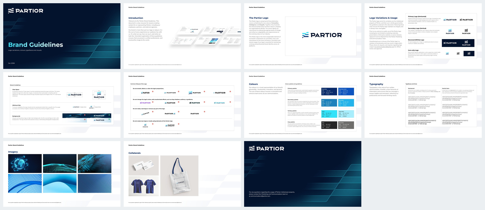<figcaption style="padding:8px 12px 12px">Partior Brand Guidelines, January 2026. Eleven pages, written so the commercial team, the partner banks and outside agencies can produce correct work without coming through me.</figcaption></figure>
    <p class="more"><a href="#partior">Rest of the Partior work ↓</a></p>
  </div>
  <div class="gov-brand" id="gov-clair">
    <div class="case-head">
      <p class="who"><strong>cl-air</strong>Brand playbook v1.2 · August 2023</p>
      <p class="desc">A small playbook that the packaging, brochure, box and namecards were all built from as the product range grew.</p>
    </div>
    <figure class="plate full">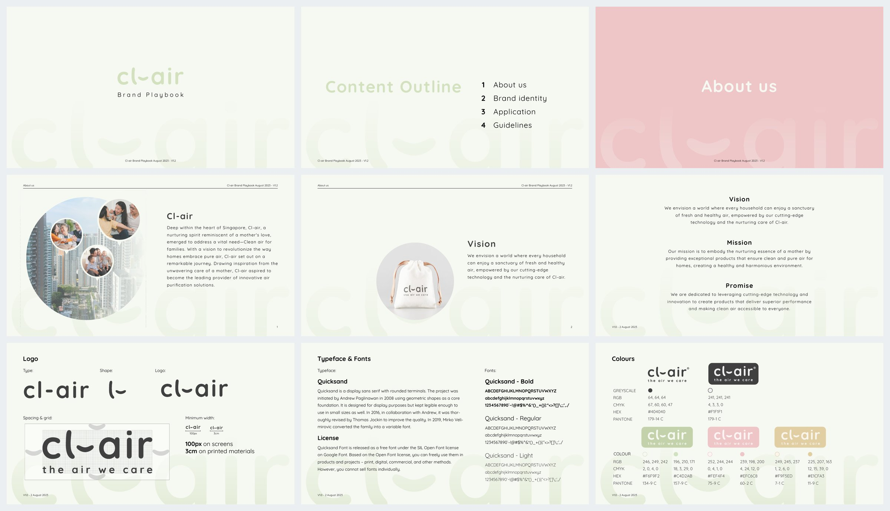<figcaption style="padding:8px 12px 12px">cl-air Brand Playbook v1.2, August 2023. Nine pages: cover, contents, brand story, vision, mission and promise, logo with spacing grid and minimum sizes, typeface and licence, and colours with RGB, CMYK, HEX and Pantone values.</figcaption></figure>
    <p class="more"><a href="#clair">Rest of the cl-air work ↓</a></p>
  </div>
  </section>

  <section class="index work-intro" id="work">
    <p class="label">Visual work</p>
    <h2 style="margin-top:14px;font-size:clamp(30px,4.4vw,56px);letter-spacing:-0.02em">The design behind it</h2>
    <p style="margin-top:18px;font-size:18px;color:var(--ink-soft)">The same projects from the production side, plus consumer work from before I moved into financial services.</p>
    <ol>
      <li><a href="#partior"><span>2025–</span><span>Partior<em>Guidelines, website, 3D key visuals, films and the content system</em></span></a></li>
      <li><a href="#webull"><span>2022–24</span><span>Webull<em>Out-of-home and social campaign execution</em></span></a></li>
      <li><a href="#teleskop"><span>2024–25</span><span>Teleskop<em>Brand from nothing, website, and a summit booth</em></span></a></li>
      <li><a href="#clair"><span>2023–24</span><span>cl-air<em>Proposal, logo survey, brand playbook, 3D renders, packaging and labels</em></span></a></li>
      <li><a href="#primeliquor"><span>2021–22</span><span>Prime Liquor<em>Brand book, icon sets, packaging and launch creative</em></span></a></li>
      <li><a href="#yokumoku"><span>2025</span><span>Yoku Moku<em>Seasonal catalogue and Chinese New Year red packets</em></span></a></li>
      <li><a href="#babysafe"><span>2019–21</span><span>BabySafe<em>Character system and packaging range for a bedding brand</em></span></a></li>
      <li><a href="#zenko"><span>2019–21</span><span>Zenko Superfoods<em>Retail standee, packaging and carton</em></span></a></li>
      <li><a href="#mustela"><span>2019–21</span><span>Mustela Singapore<em>Campaigns, illustration and content for a distributor brand</em></span></a></li>
    </ol>
  </section>

  <!-- Partior -->
  <article class="project" id="partior">
    <div class="project-head">
      <h2><small>01 · Brand guidelines, website and 3D visuals for a payments network</small>Partior</h2>
      <dl class="meta">
        <dt>Client</dt><dd>Partior, a blockchain-based clearing and settlement network operated with DBS, J.P. Morgan, Standard Chartered and Temasek</dd>
        <dt>Year</dt><dd>August 2025 – present, in-house</dd>
        <dt>Role</dt><dd>Sole marketing and design lead, reporting to the CEO. Direct an external agency and production vendors</dd>
        <dt>Deliverables</dt><dd>Brand guidelines, website (design, 3D key visuals in Blender, build on Webflow), modular diagram and content system, platform video, product-line videos, partnership announcement visuals, event and client collateral, Figma UI screens for product</dd>
      </dl>
    </div>

    <figure class="plate full">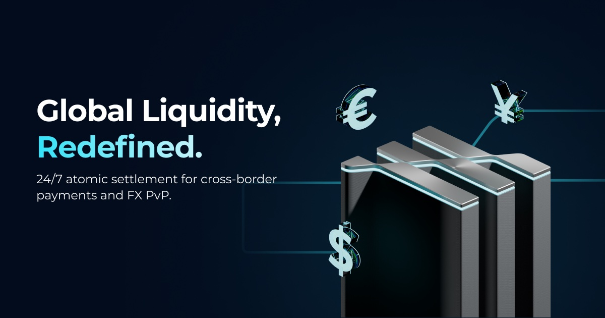<figcaption style="padding:8px 12px 12px">partior.com hero. "Global liquidity, redefined." The ledger stack and the currency symbols are modelled and rendered in Blender.</figcaption></figure>
    <div class="grid g2 r169">
      <figure><div class="plate contain" style="background:#09111e;border-color:#09111e">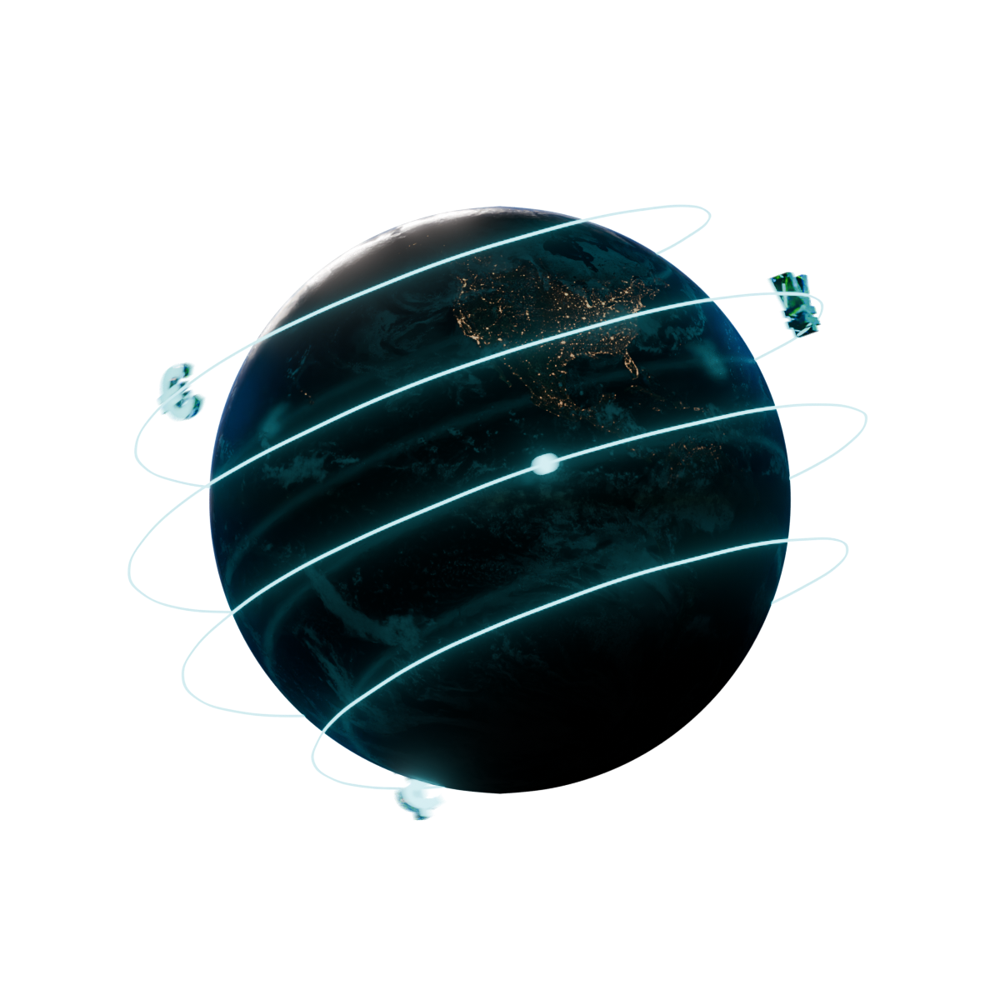</div><figcaption>Globe with currency orbits. Blender, used across the site and social.</figcaption></figure>
      <figure><div class="plate video contain"><video muted loop playsinline preload="none" poster="videos/partior-processing.jpg" src="videos/partior-processing.mp4"></video><span class="play">play</span></div><figcaption>"Live 24/7" processing loop, 3 s. Rendered in Blender for the settlement section of the site.</figcaption></figure>
    </div>
    <figure class="plate full">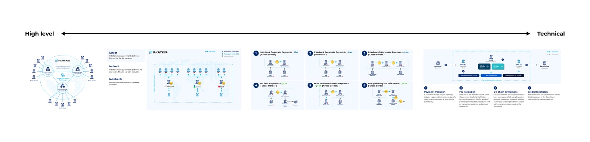<figcaption style="padding:8px 12px 12px">Modular content system. The same clearing and settlement flow drawn at four depths, so a commercial lead can pick the level for the person in front of them and the diagrams still look like one family.</figcaption></figure>
    <div class="grid g3 r169">
      <figure><div class="plate">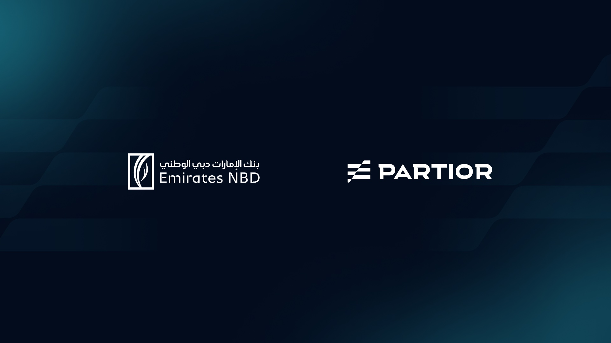</div><figcaption>Partnership announcement, Emirates NBD, June 2026.</figcaption></figure>
      <figure><div class="plate contain" style="background:#0a1f3d;border-color:#0a1f3d">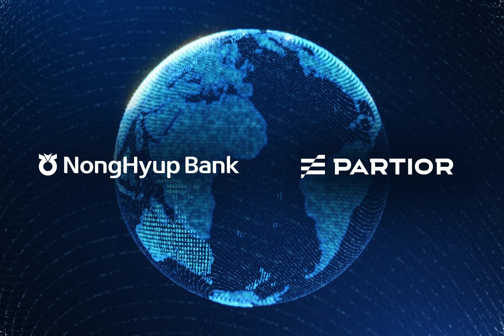</div><figcaption>NongHyup Bank announcement.</figcaption></figure>
      <figure><div class="plate contain">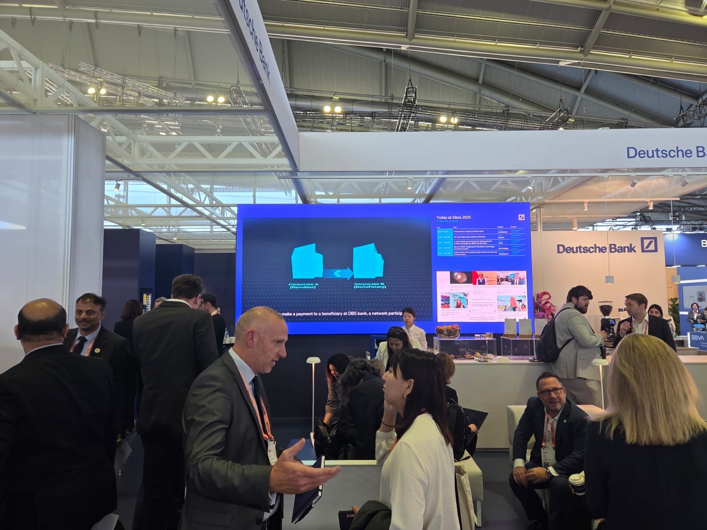</div><figcaption>Sibos 2025. The platform video I produced, playing on Deutsche Bank's own stand; Deutsche Bank also published it on its corporate site.</figcaption></figure>
    </div>
    <div class="grid g2 r169">
      <figure class="film"><div class="plate video"><video controls playsinline preload="none" poster="videos/partior-deutsche-bank.jpg" src="videos/partior-deutsche-bank.mp4"></video></div><figcaption>Deutsche Bank and Partior, platform film<span>1 min 35 s, with sound. The euro payment followed end to end, from Deutsche Bank posting the instruction to settlement at DBS. This is the film that ran on Deutsche Bank's stand at Sibos 2025.</span></figcaption></figure>
      <figure class="film"><div class="plate video"><video controls playsinline preload="none" poster="videos/partior-nonghyup-bank.jpg" src="videos/partior-nonghyup-bank.mp4"></video></div><figcaption>NongHyup Bank and Partior, announcement film<span>1 min 35 s, Korean voiceover and subtitles, for release in Korea. Marks the completion of the cross-border settlement pilot with J.P. Morgan and Partior.</span></figcaption></figure>
    </div>

    <p class="crossref">The brand guidelines for this project are under <a href="#gov-partior">Brand governance</a>.</p>
    <p class="crossref">The positioning and communications behind this project are in <a href="#case-partior">Communications and strategy</a>.</p>
  </article>

  <!-- Webull -->
  <article class="project" id="webull">
    <div class="project-head">
      <h2><small>02 · Campaign creative and out-of-home</small>Webull</h2>
      <dl class="meta">
        <dt>Client</dt><dd>Webull Holdings (Singapore), a global retail investment platform</dd>
        <dt>Year</dt><dd>July 2022 – October 2024, in-house as Branding Associate</dd>
        <dt>Role</dt><dd>Campaign creative and adaptation across Singapore, Hong Kong, Australia, Japan and Malaysia, with in-market teams and media agencies</dd>
        <dt>Deliverables</dt><dd>Out-of-home across MRT platform screen doors, the Bugis ambient wall, mall facade screens, bus shelters and bus wraps; anniversary campaign announcement workstream; event collateral; social and in-app creative</dd>
      </dl>
    </div>

    <figure class="plate full">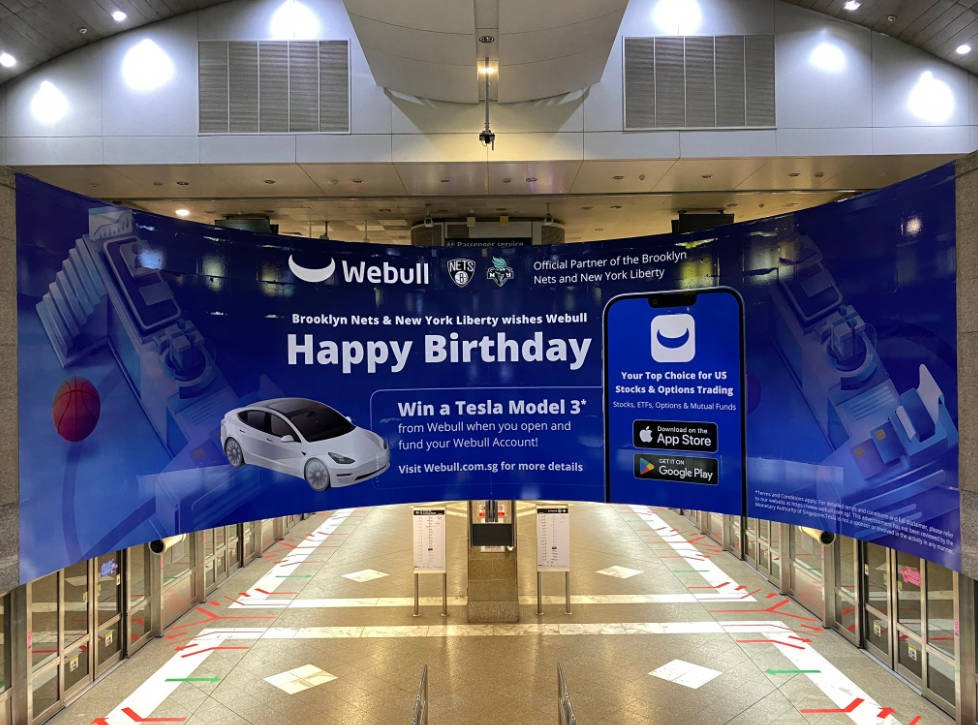<figcaption>Bugis MRT, ambient wall over the concourse escalators. 10.67 × 3.01 m, one panel. The birthday campaign with the Brooklyn Nets partnership, April 2023.</figcaption></figure>
    <div class="grid g2 r43">
      <figure><div class="plate">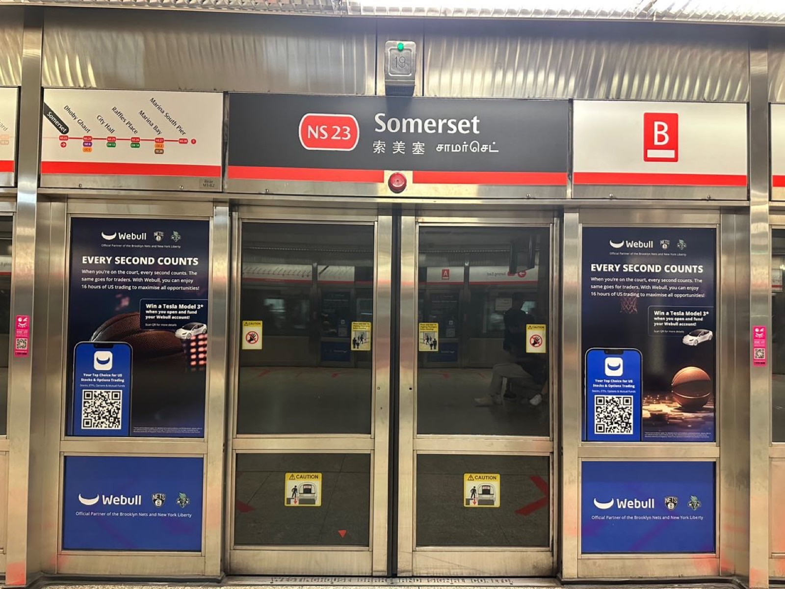</div><figcaption>Somerset MRT, platform screen doors. "Every second counts", the anniversary campaign.</figcaption></figure>
      <figure><div class="plate">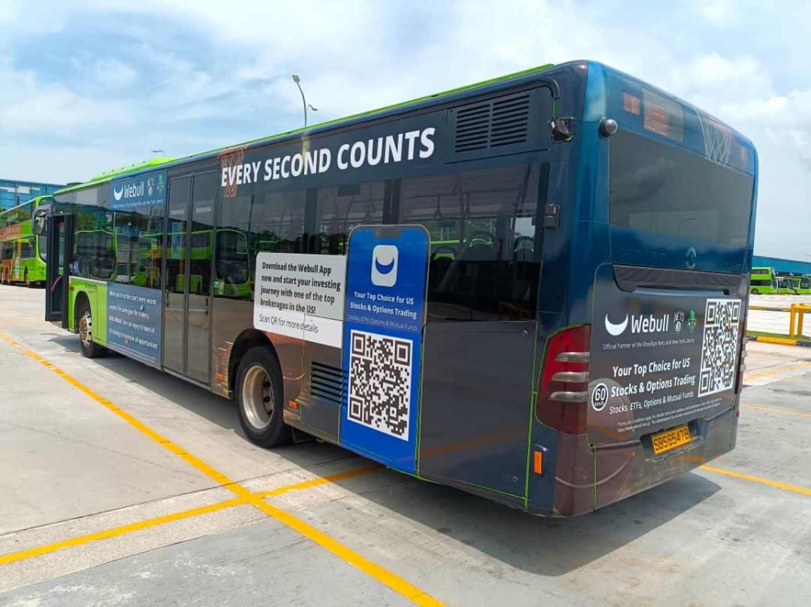</div><figcaption>Bus wrap, same campaign. Artwork adapted to the vehicle template and checked against the printer's proof.</figcaption></figure>
    </div>
    <div class="grid g5 r43">
      <figure><div class="plate">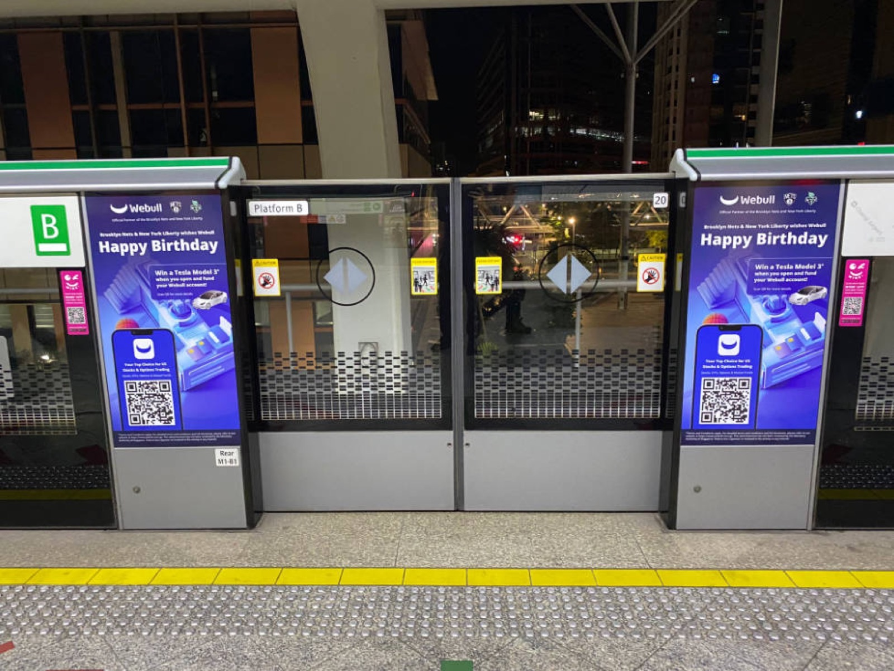</div><figcaption>Birthday campaign, platform screen doors.</figcaption></figure>
      <figure><div class="plate">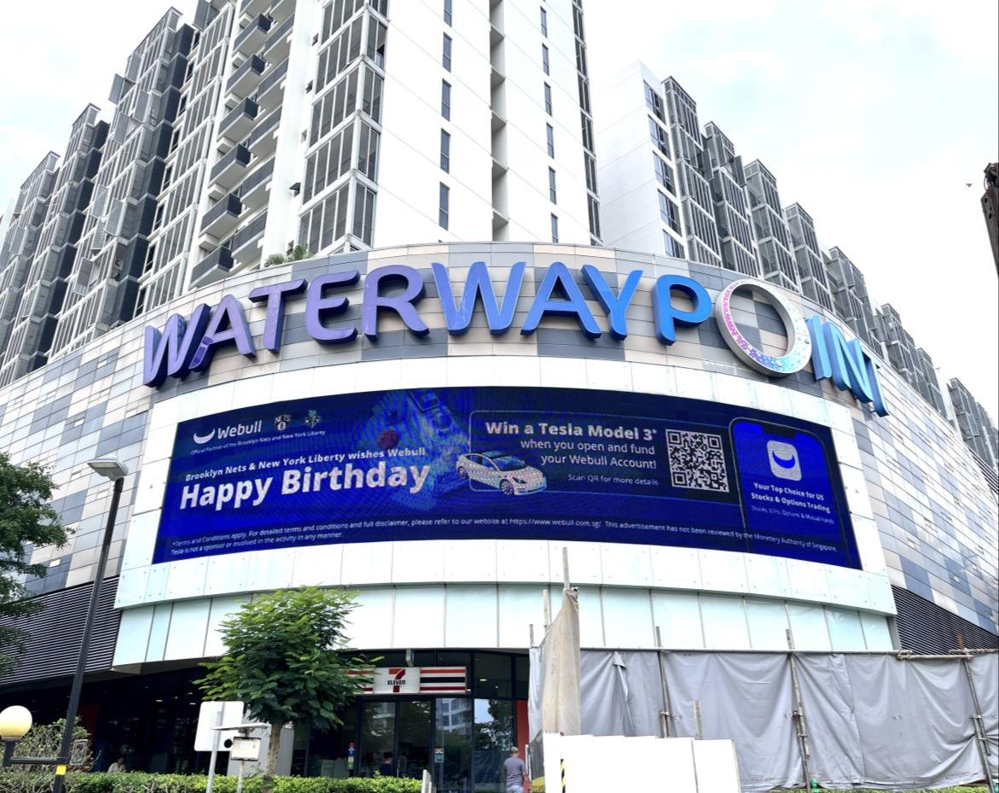</div><figcaption>Waterway Point facade screen.</figcaption></figure>
      <figure><div class="plate contain">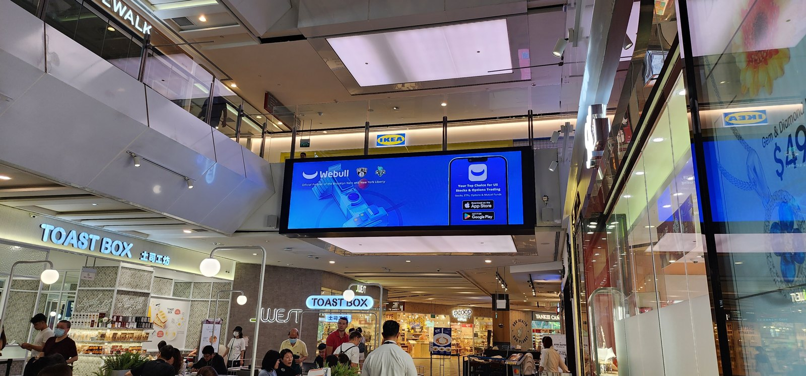</div><figcaption>JEM facade wall.</figcaption></figure>
      <figure><div class="plate">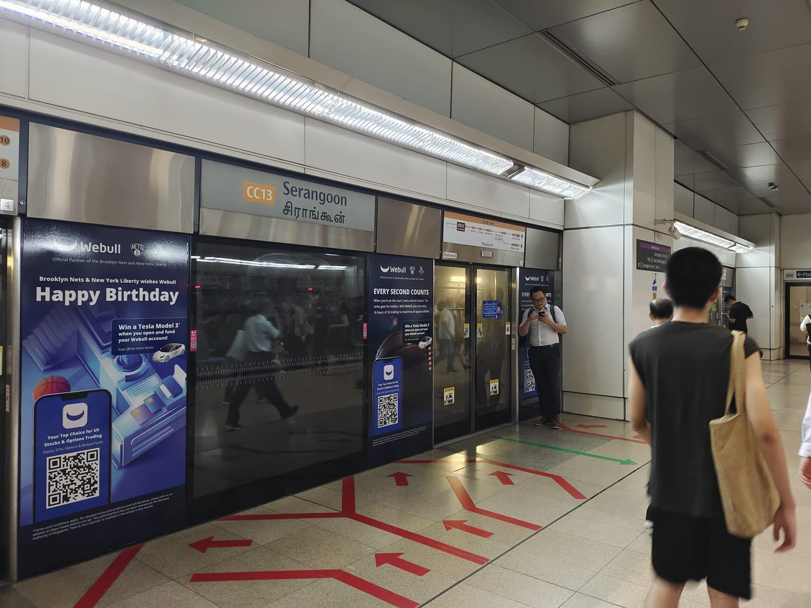</div><figcaption>Serangoon MRT, platform screen doors.</figcaption></figure>
      <figure><div class="plate">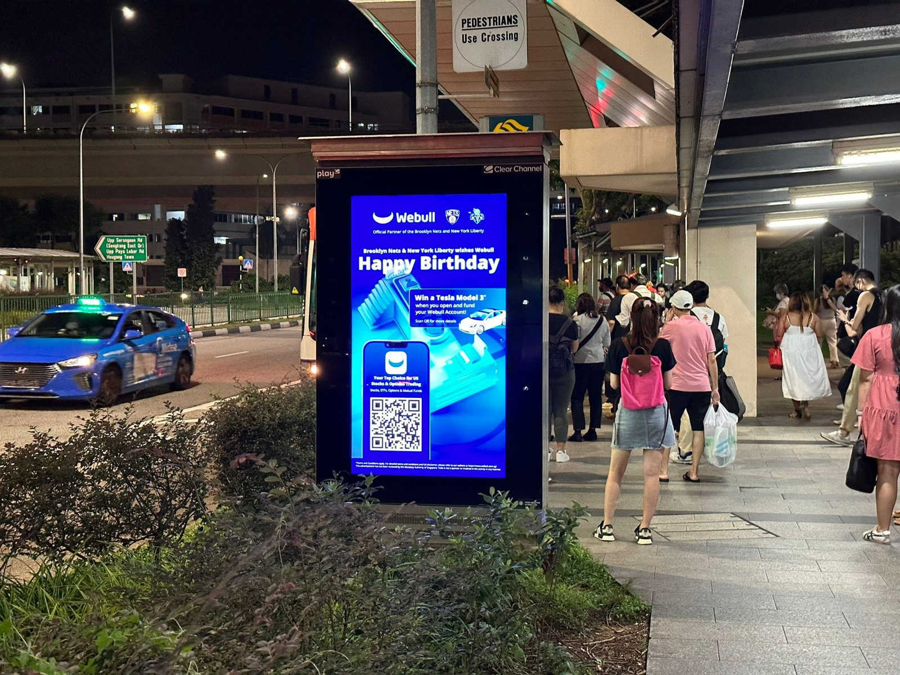</div><figcaption>Bus shelter, Serangoon. The campaign ran on 12 station and mall sites plus buses.</figcaption></figure>
    </div>
    <figure class="plate video full" style="aspect-ratio:7680/990"><video muted loop playsinline preload="none" poster="videos/webull-sph-vivocity-megascreen-10s.jpg" src="videos/webull-sph-vivocity-megascreen-10s.mp4"></video><span class="play">play</span><figcaption style="padding:8px 12px 12px">VivoCity MegaScreen, SPH. 7680 × 990, 10 s. Birthday campaign with the Brooklyn Nets partnership.</figcaption></figure>
    <div class="grid g4 r11">
      <figure><div class="plate video contain"><video muted loop playsinline preload="none" poster="videos/webull-clearchannel-busshelter-10s.jpg" src="videos/webull-clearchannel-busshelter-10s.mp4"></video><span class="play">play</span></div><figcaption>SMRT bus shelters, Clear Channel<span>1080 × 1920, 10 s.</span></figcaption></figure>
      <figure><div class="plate video contain"><video muted loop playsinline preload="none" poster="videos/webull-dhobyghaut-busstop-site.jpg" src="videos/webull-dhobyghaut-busstop-site.mp4"></video><span class="play">play</span></div><figcaption>In situ, Dhoby Ghaut<span>Site video of the placement.</span></figcaption></figure>
      <figure><div class="plate video"><video muted loop playsinline preload="none" poster="videos/webull-japan-launch-post-15s.jpg" src="videos/webull-japan-launch-post-15s.mp4"></video><span class="play">play</span></div><figcaption>Sixth anniversary, Japan launch<span>15 s. The city-series illustrations animated.</span></figcaption></figure>
      <figure><div class="plate video"><video muted loop playsinline preload="none" poster="videos/webull-learning-stop-limit-21s.jpg" src="videos/webull-learning-stop-limit-21s.mp4"></video><span class="play">play</span></div><figcaption>Learning Centre, stop-limit order<span>21 s. One of twelve explainers on order types.</span></figcaption></figure>
    </div>
    <div class="grid g3 r11">
      <figure><div class="plate video"><video muted loop playsinline preload="none" poster="videos/webull-mothers-day-18s.jpg" src="videos/webull-mothers-day-18s.mp4"></video><span class="play">play</span></div><figcaption>Mother's Day, mascot<span>18 s.</span></figcaption></figure>
      <figure><div class="plate video contain"><video muted loop playsinline preload="none" poster="videos/webull-cny-sticker-fitspo.jpg" src="videos/webull-cny-sticker-fitspo.mp4"></video><span class="play">play</span></div><figcaption>CNY 2023 3D mascot stickers<span>Blender. Six stickers in the set.</span></figcaption></figure>
      <figure><div class="plate video"><video muted loop playsinline preload="none" poster="videos/webull-cny-3ways-angbao.jpg" src="videos/webull-cny-3ways-angbao.mp4"></video><span class="play">play</span></div><figcaption>CNY 2023, "3 ways to use your angbao money"<span>5 s, the Singaporean way.</span></figcaption></figure>
    </div>

    <p class="crossref">The positioning and communications behind this project are in <a href="#case-webull">Communications and strategy</a>.</p>
  </article>

  <!-- Teleskop -->
  <article class="project" id="teleskop">
    <div class="project-head">
      <h2><small>03 · Brand, website and event</small>Teleskop</h2>
      <dl class="meta">
        <dt>Client</dt><dd>Teleskop Technologies, an early-stage financial-wellness and legacy-planning app</dd>
        <dt>Year</dt><dd>November 2024 – July 2025, in-house as Marketing Manager</dd>
        <dt>Role</dt><dd>First and only marketing hire. Owned brand, website, content, event programme</dd>
        <dt>Deliverables</dt><dd>Identity and logo pack, website, social and video content, Echelon Asia Summit 2025 booth and print, app store creative</dd>
      </dl>
    </div>

    <div class="grid g2 r169">
      <figure><div class="plate contain" style="background:#1d2a44;border-color:#1d2a44">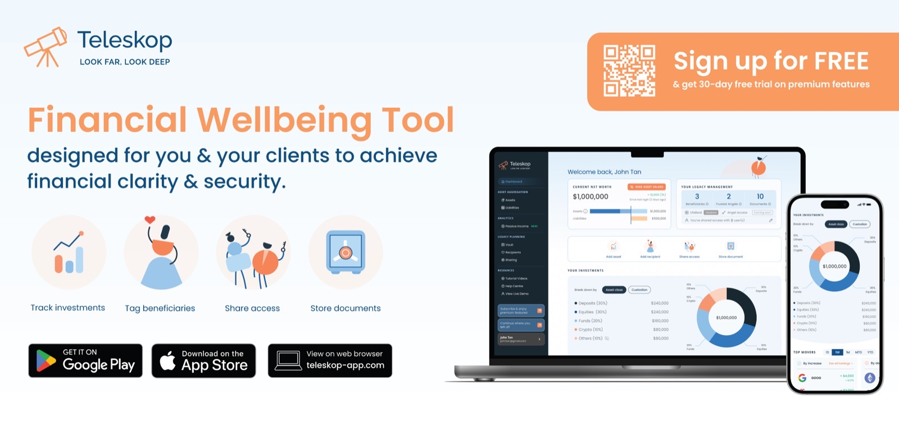</div><figcaption>Booth backdrop, Echelon Asia Summit 2025, booth M04. Print-ready at 3 m wide.</figcaption></figure>
      <figure class="film"><div class="plate video"><video controls playsinline preload="none" poster="videos/teleskop-interview-women-16x9.jpg" src="videos/teleskop-interview-women-16x9.mp4"></video></div><figcaption>"What is financial wellness?" interview series<span>2 min 22 s, with sound. Shot, cut, subtitled and titled in-house; 16:9 and 9:16 versions of each answer.</span></figcaption></figure>
    </div>
    <div class="grid g4 r11">
      <figure><div class="plate contain">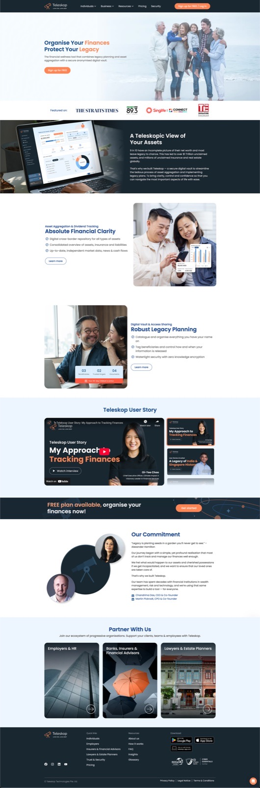</div><figcaption>Website home page, designed in Figma and built on WordPress. Top of the page shown.</figcaption></figure>
      <figure><div class="plate video"><video muted loop playsinline preload="none" poster="videos/teleskop-tag-beneficiaries-pearl.jpg" src="videos/teleskop-tag-beneficiaries-pearl.mp4"></video><span class="play">play</span></div><figcaption>"Tag beneficiaries", Girl with a Pearl Earring<span>15 s. Old masters holding the app.</span></figcaption></figure>
      <figure><div class="plate video"><video muted loop playsinline preload="none" poster="videos/teleskop-tag-beneficiaries-monalisa.jpg" src="videos/teleskop-tag-beneficiaries-monalisa.mp4"></video><span class="play">play</span></div><figcaption>"Tag beneficiaries", Mona Lisa<span>15 s.</span></figcaption></figure>
      <figure><div class="plate video"><video muted loop playsinline preload="none" poster="videos/teleskop-tag-beneficiaries-vangogh.jpg" src="videos/teleskop-tag-beneficiaries-vangogh.mp4"></video><span class="play">play</span></div><figcaption>"Tag beneficiaries", Van Gogh<span>15 s.</span></figcaption></figure>
    </div>

    <p class="crossref">The positioning and communications behind this project are in <a href="#case-teleskop">Communications and strategy</a>.</p>
  </article>

  <!-- cl-air -->
  <article class="project" id="clair">
    <div class="project-head">
      <h2><small>04 · Identity, labels and print</small>cl-air</h2>
      <dl class="meta">
        <dt>Client</dt><dd>cl-air, a Singapore home-care brand making formaldehyde-removal products</dd>
        <dt>Year</dt><dd>June 2023 – 2024, freelance. Proposal and survey in mid-2023, playbook v1.2 in August 2023, packaging through 2024</dd>
        <dt>Role</dt><dd>Branding proposal, logo survey and debrief, identity, brand playbook, packaging and print</dd>
        <dt>Deliverables</dt><dd>Wordmark and tagline, brand playbook (logo, spacing grid, minimum sizes, Quicksand type, six-colour palette with RGB/CMYK/HEX/Pantone, vision and mission), 3D key visuals and product renders in Blender, pouch packaging with seal stickers, tri-fold brochure, A5 flyer, gift card, namecards, shipping box, wrapping paper, social templates</dd>
      </dl>
    </div>

    <div class="grid g4 r11">
      <figure><div class="plate">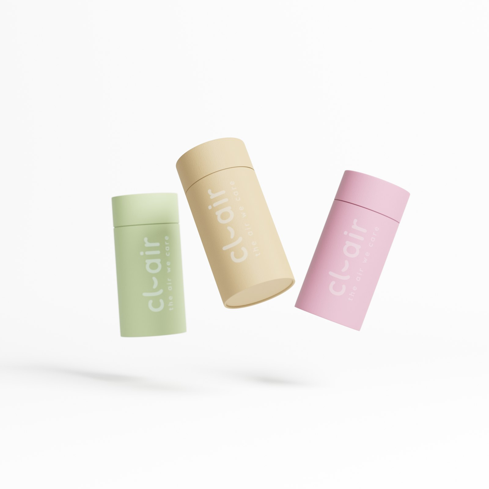</div><figcaption>Key visual, August 2023. The three colourways, modelled and rendered in Blender before anything was printed.</figcaption></figure>
      <figure><div class="plate">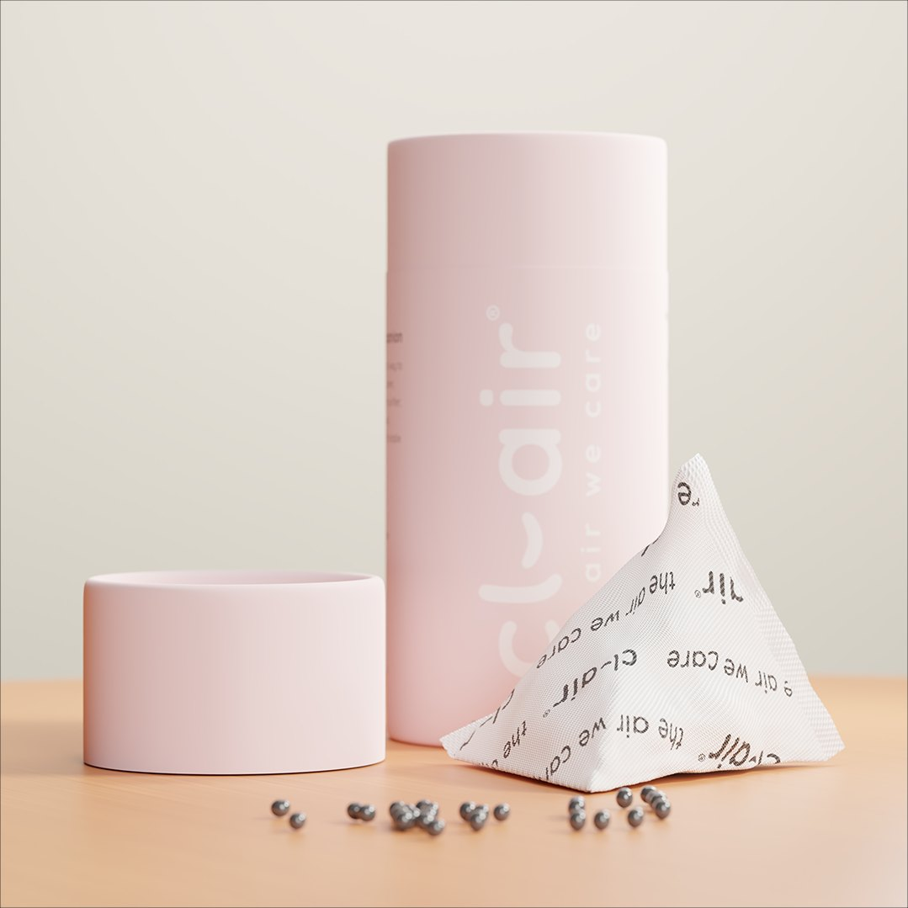</div><figcaption>Opened tube with the pouch and the pellets, for the how-it-works section.</figcaption></figure>
      <figure><div class="plate">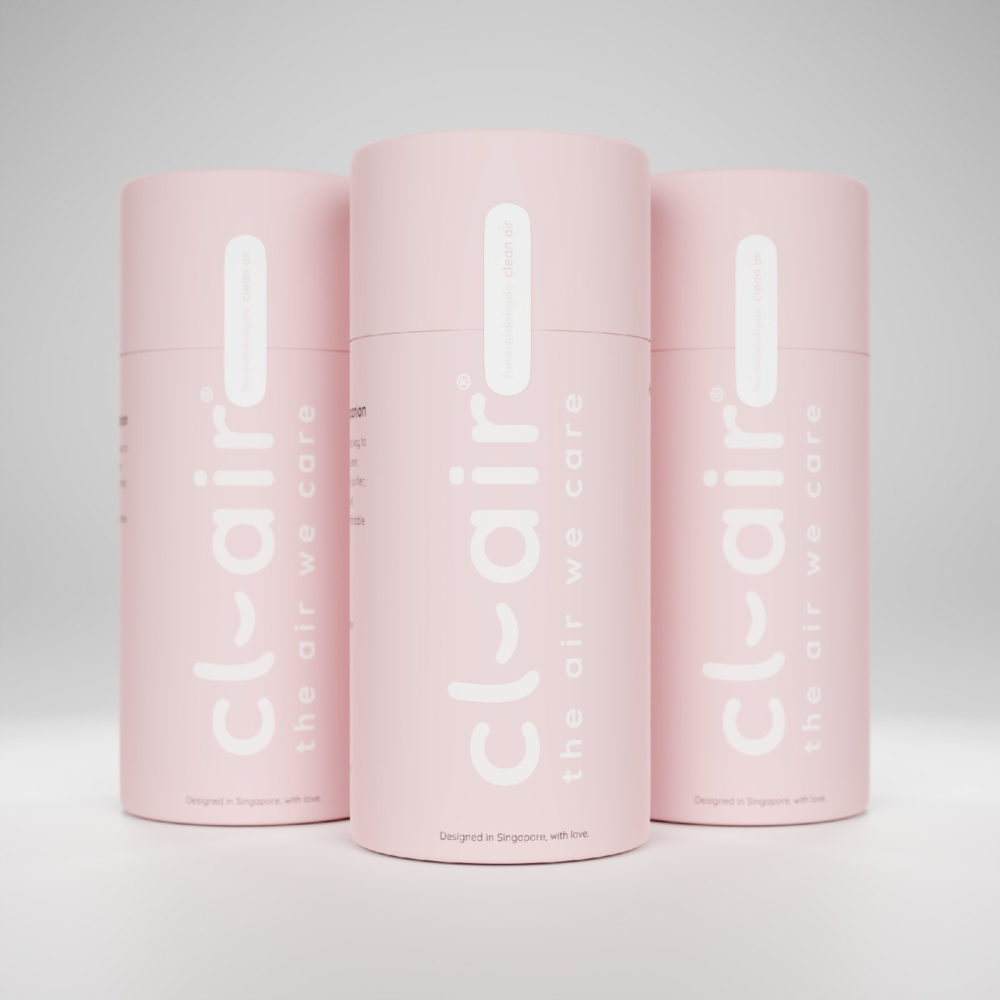</div><figcaption>Product shot for the shop, one of a set from single to six-pack.</figcaption></figure>
      <figure><div class="plate">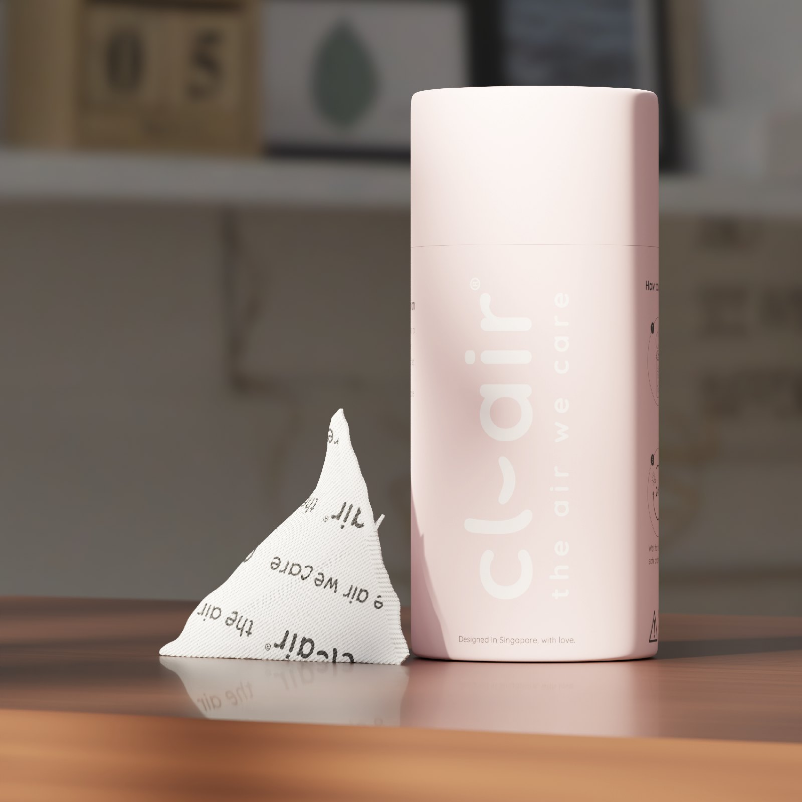</div><figcaption>In the home. Same model, lifestyle set.</figcaption></figure>
    </div>
    <div class="grid  r11" style="grid-template-columns:minmax(0,1fr);max-width:720px">
      <figure><div class="plate contain">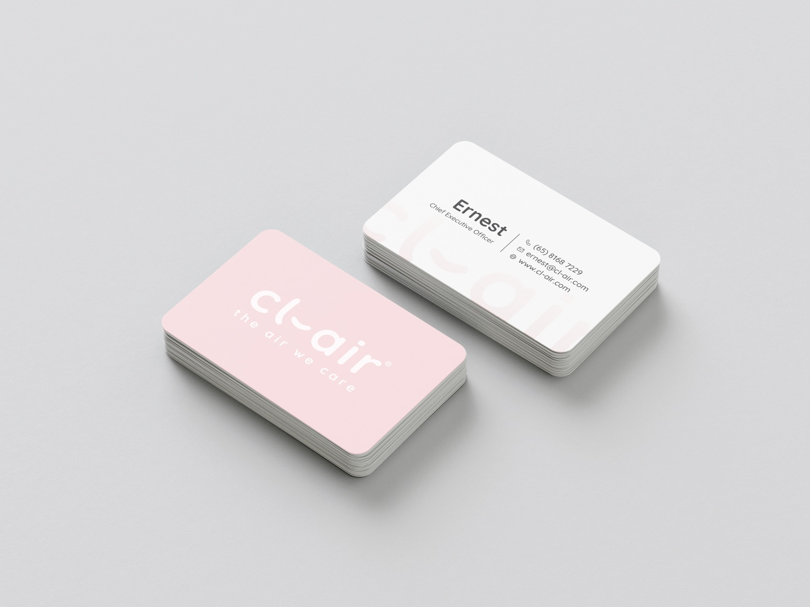</div><figcaption>Namecards, January 2024.</figcaption></figure>
    </div>
    <div class="grid g4 r11">
      <figure><div class="plate contain">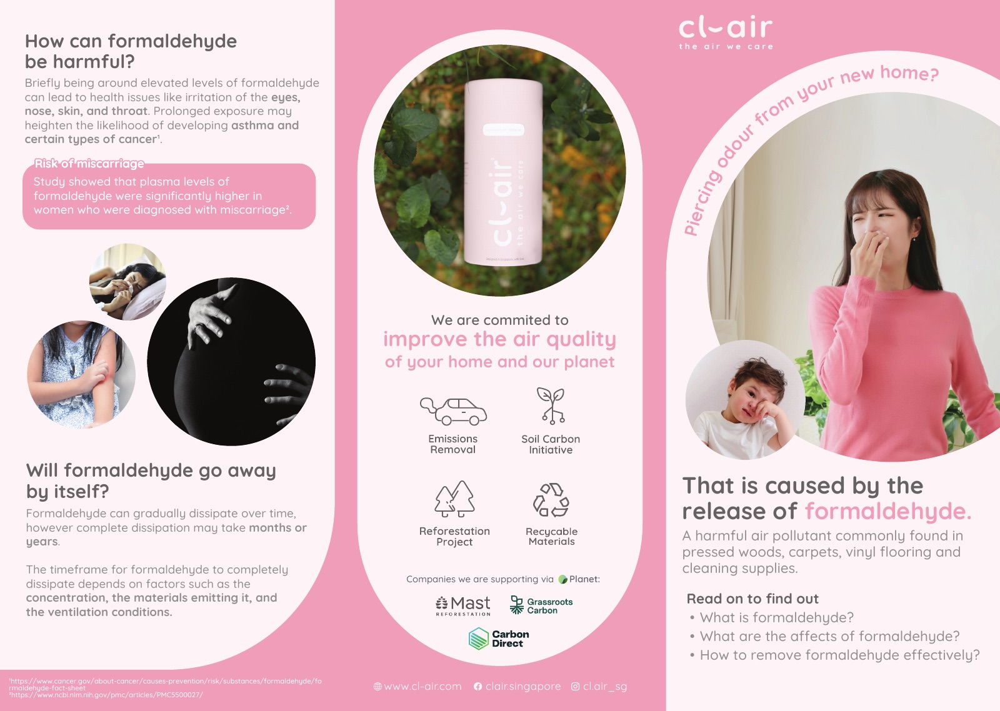</div><figcaption>Tri-fold brochure. Most of the job was explaining the problem.</figcaption></figure>
      <figure><div class="plate contain">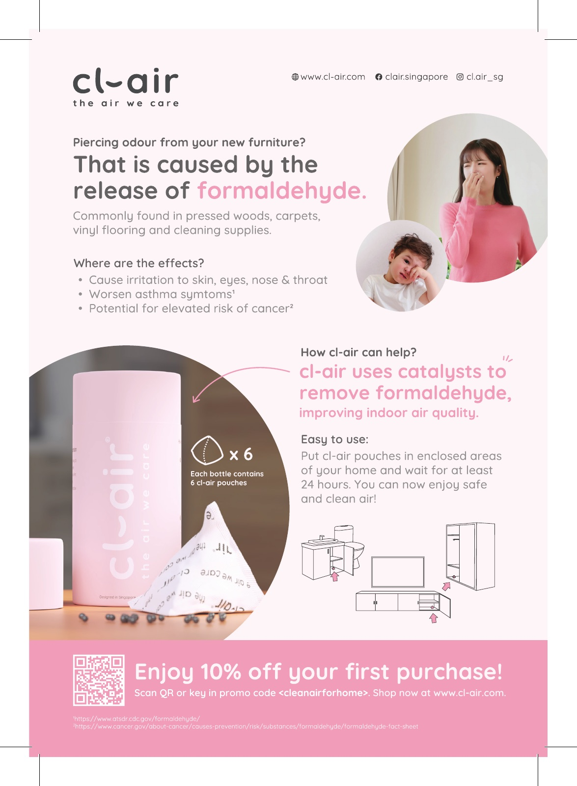</div><figcaption>A5 flyer for showflats.</figcaption></figure>
      <figure><div class="plate contain">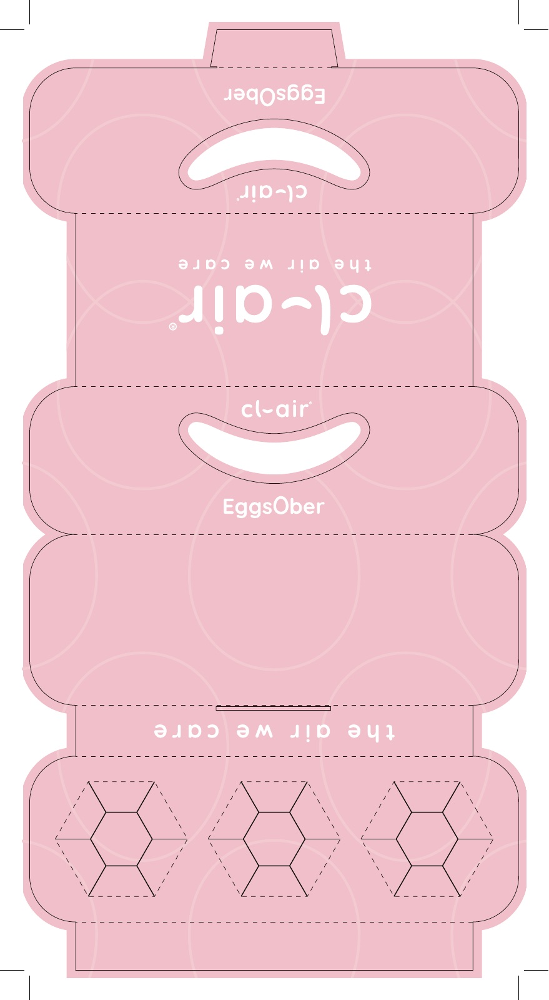</div><figcaption>Shipping box dieline.</figcaption></figure>
      <figure><div class="plate contain">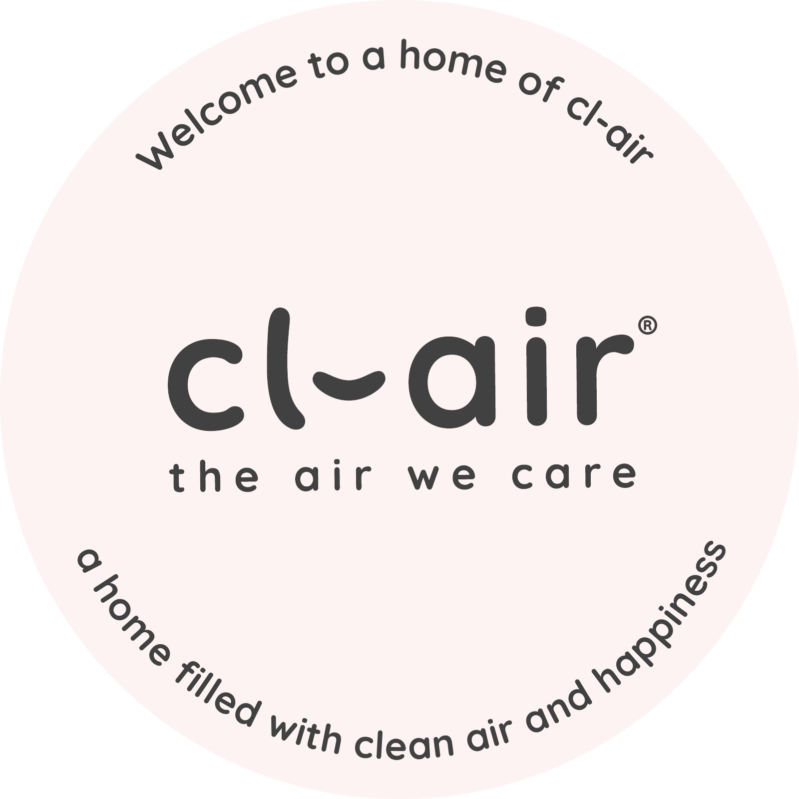</div><figcaption>Door sticker left after a treatment.</figcaption></figure>
    </div>

    <p class="crossref">The brand guidelines for this project are under <a href="#gov-clair">Brand governance</a>.</p>
    <div class="story">
      <h3>The brief</h3>
      <div><p>A new product in a category most people have never thought about, formaldehyde off-gassing from new furniture, sold to people who have just renovated. The brand had to be calm and domestic rather than clinical, and the print had to do a lot of explaining.</p></div>
      <h3>What I did</h3>
      <div>
        <p>This one started with a branding proposal in June 2023 that set out scope, stages and pricing, so the founders knew what they were buying. The logo exploration went to a survey with the founders and a small group of target customers, and I wrote up the debrief before committing to a direction. The playbook came next: logo construction, spacing grid, minimum sizes, the typeface and its licence, and a six-colour palette with print and screen values. Everything after that, the pouch packaging, seal stickers, labels, brochure, box and namecards, was built from the playbook as the product range grew. The product photography is not photography: the tube and the pouch are Blender models, so the shop and the social feed had consistent product shots before the first production run, and every new colourway or label was a re-render rather than a reshoot.</p>
      </div>
      <h3>What I would point to</h3>
      <div>
        <ul>
          <li>Using a survey to settle the logo, and writing up the debrief, so the founders owned the decision.</li>
          <li>A small playbook that every later piece of packaging and print was built from.</li>
          <li>3D product renders instead of a photo shoot, which is what made the range look finished while it was still being made.</li>
        </ul>
      </div>
    </div>
  </article>

  <!-- Prime Liquor -->
  <article class="project" id="primeliquor">
    <div class="project-head">
      <h2><small>05 · Brand book, packaging and promotional creative</small>Prime Liquor</h2>
      <dl class="meta">
        <dt>Client</dt><dd>Ponza Trading (Prime Liquor), an alcohol delivery and premium spirits retailer, Singapore</dd>
        <dt>Year</dt><dd>November 2021 – July 2022, in-house as Brand Manager</dd>
        <dt>Role</dt><dd>Brand standards across the portfolio, seasonal promotional creative, packaging and merchandise</dd>
        <dt>Deliverables</dt><dd>Brand book (logo rules, dos and don'ts, type and colour), delivery and promo icon sets, carrier bag and a Christmas edition, product photography, a 52-card playing deck, product launch banners, seasonal and weekly e-commerce creative</dd>
      </dl>
    </div>

    <figure class="plate full">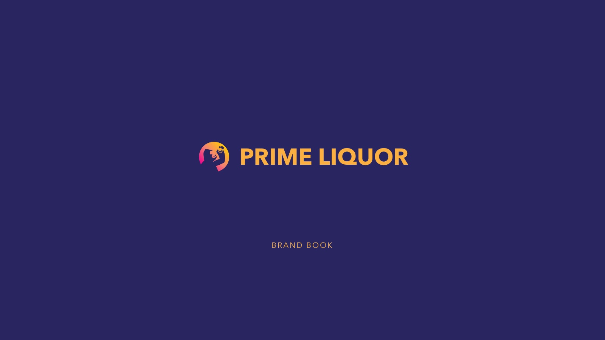</figure>
    <div class="grid  r11 g3">
      <figure><div class="plate contain">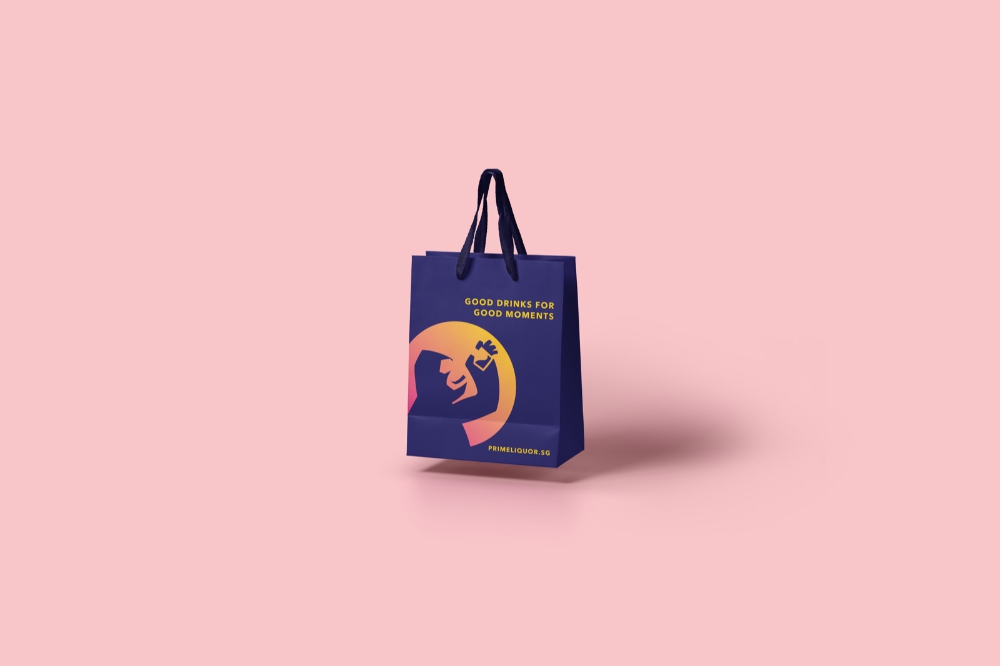</div><figcaption>Carrier bag, "good drinks for good moments".</figcaption></figure>
      <figure><div class="plate">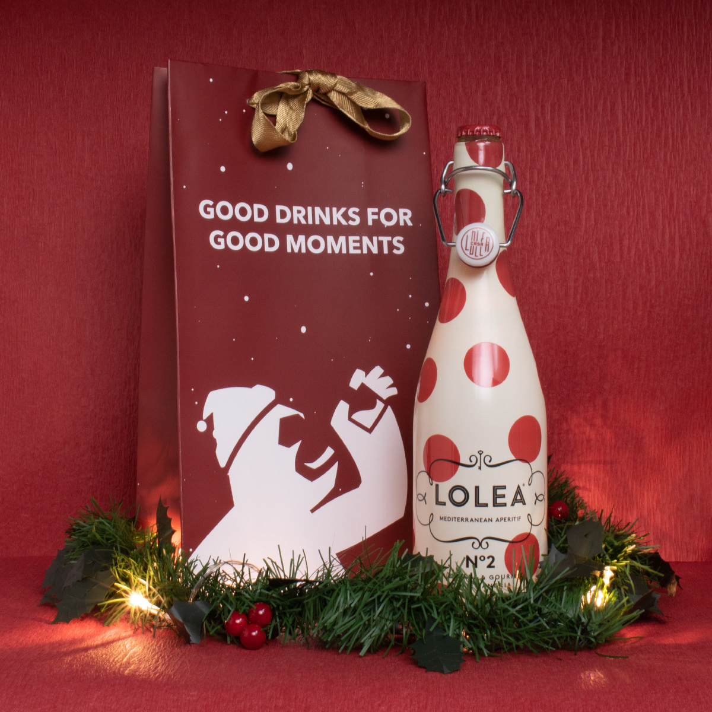</div><figcaption>Christmas edition bag. The gorilla gets a Santa hat, the navy goes maroon, and the bag is shot with the product it will carry.</figcaption></figure>
      <figure><div class="plate">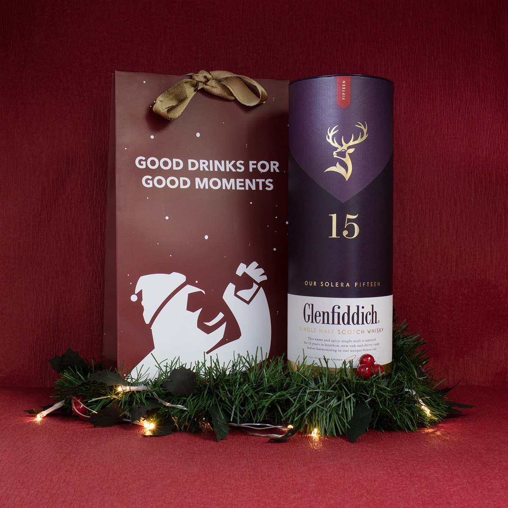</div><figcaption>Same set, Glenfiddich 15. Product photography done in-house for the festive catalogue.</figcaption></figure>
    </div>
    <figure class="plate full">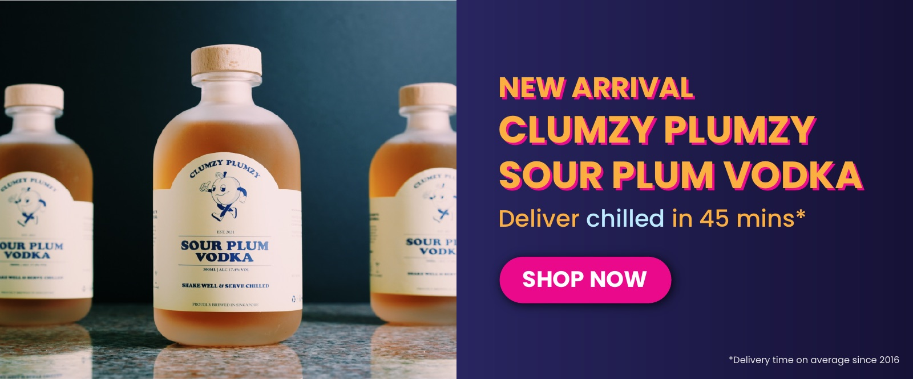<figcaption style="padding:8px 12px 12px">Clumzy Plumzy sour plum vodka launch banner for the web shop.</figcaption></figure>
    <div class="grid g2 r11">
      <figure><div class="plate">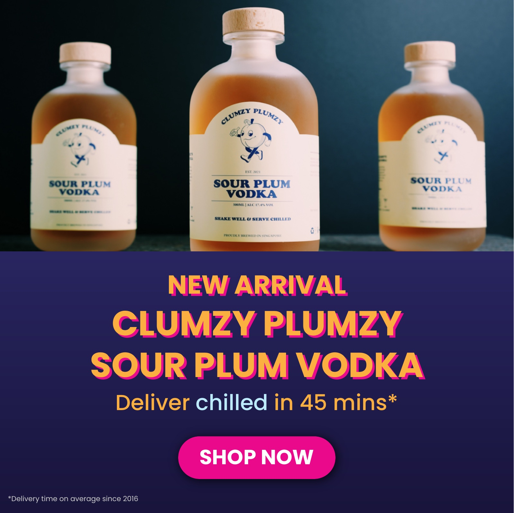</div><figcaption>The same launch cut for social, from the same file.</figcaption></figure>
      <figure><div class="plate">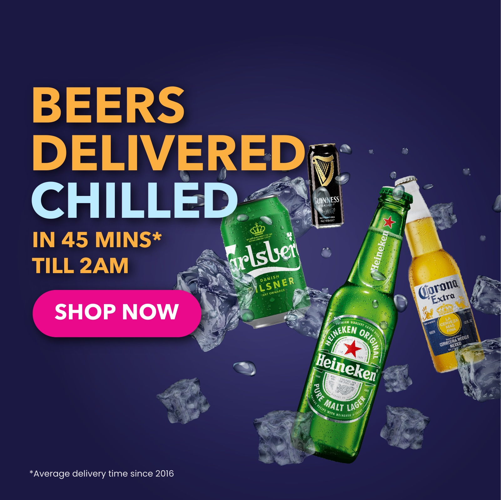</div><figcaption>"Beers delivered chilled in 45 mins, till 2am." The delivery promise as the recurring line.</figcaption></figure>
    </div>
    <div class="grid g4 r11">
      <figure><div class="plate contain" style="background:#282560;border-color:#282560">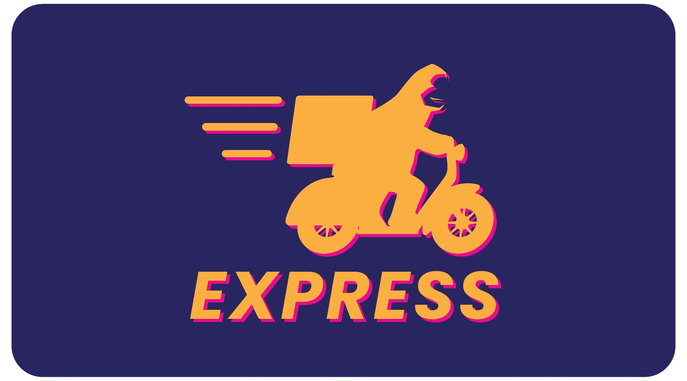</div><figcaption>Delivery icons: express.</figcaption></figure>
      <figure><div class="plate contain" style="background:#282560;border-color:#282560"></div><figcaption>Delivery icons: scheduled.</figcaption></figure>
      <figure><div class="plate">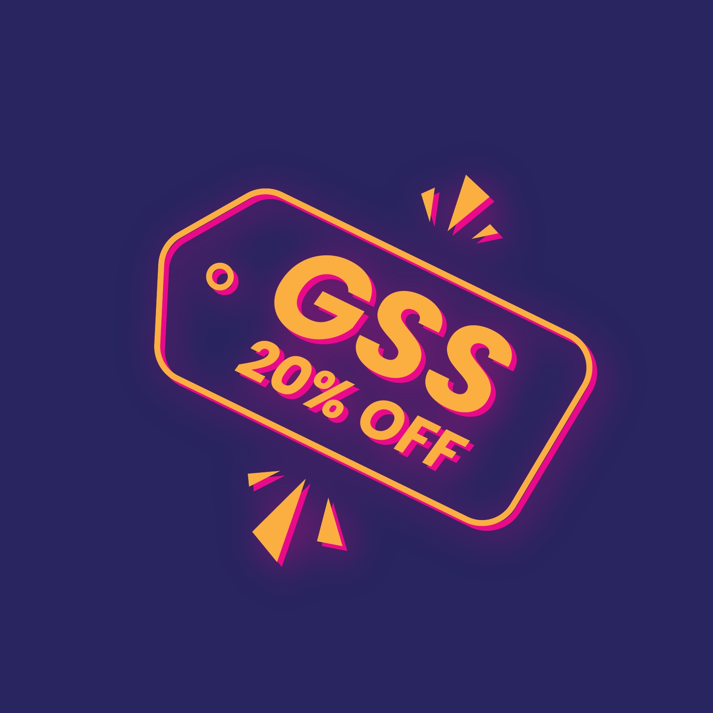</div><figcaption>Promo icons in the neon style, for the web shop and stories.</figcaption></figure>
      <figure><div class="plate">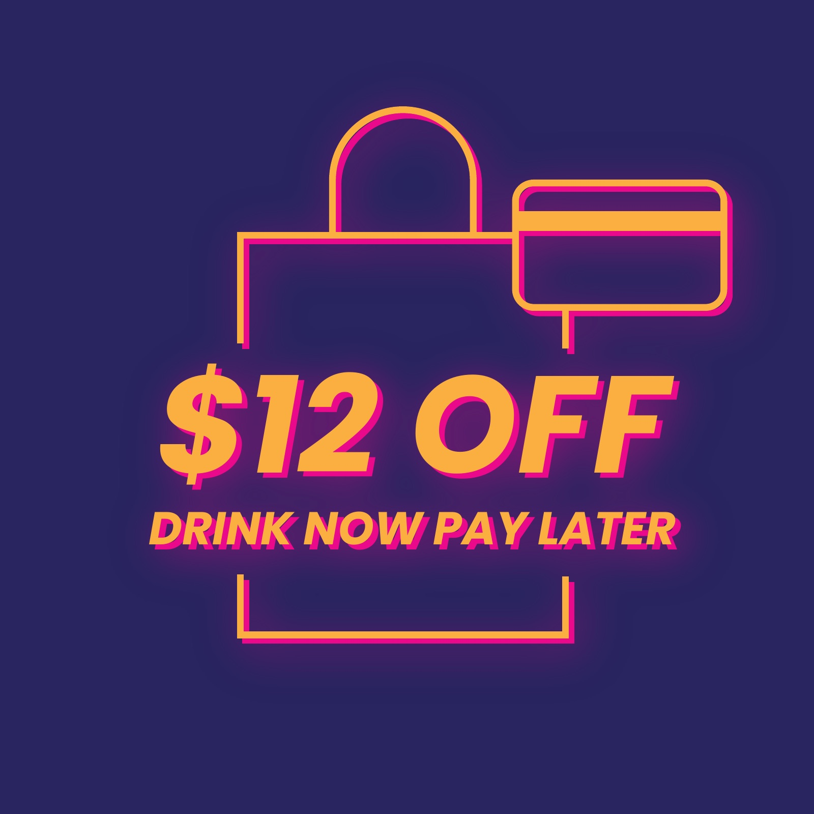</div><figcaption>"Drink now, pay later."</figcaption></figure>
    </div>
    <div class="grid g3 r11">
      <figure><div class="plate">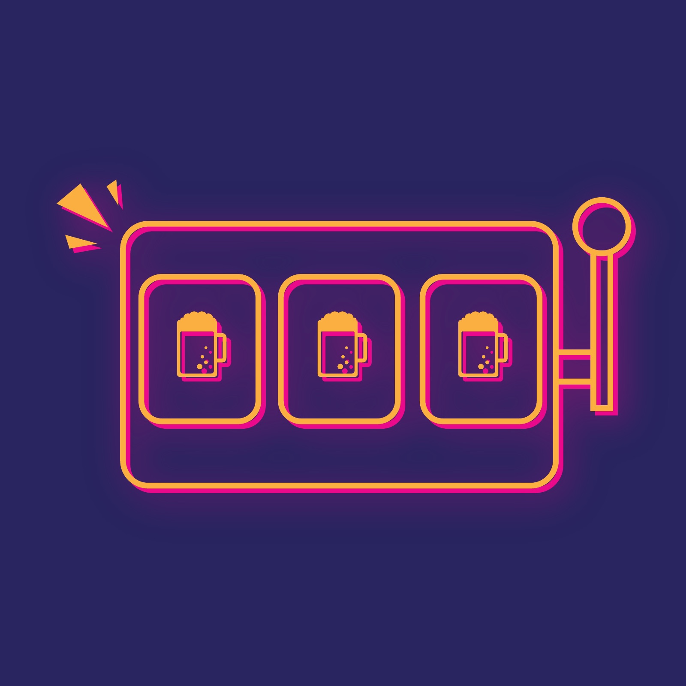</div><figcaption>Lucky draw.</figcaption></figure>
      <figure><div class="plate">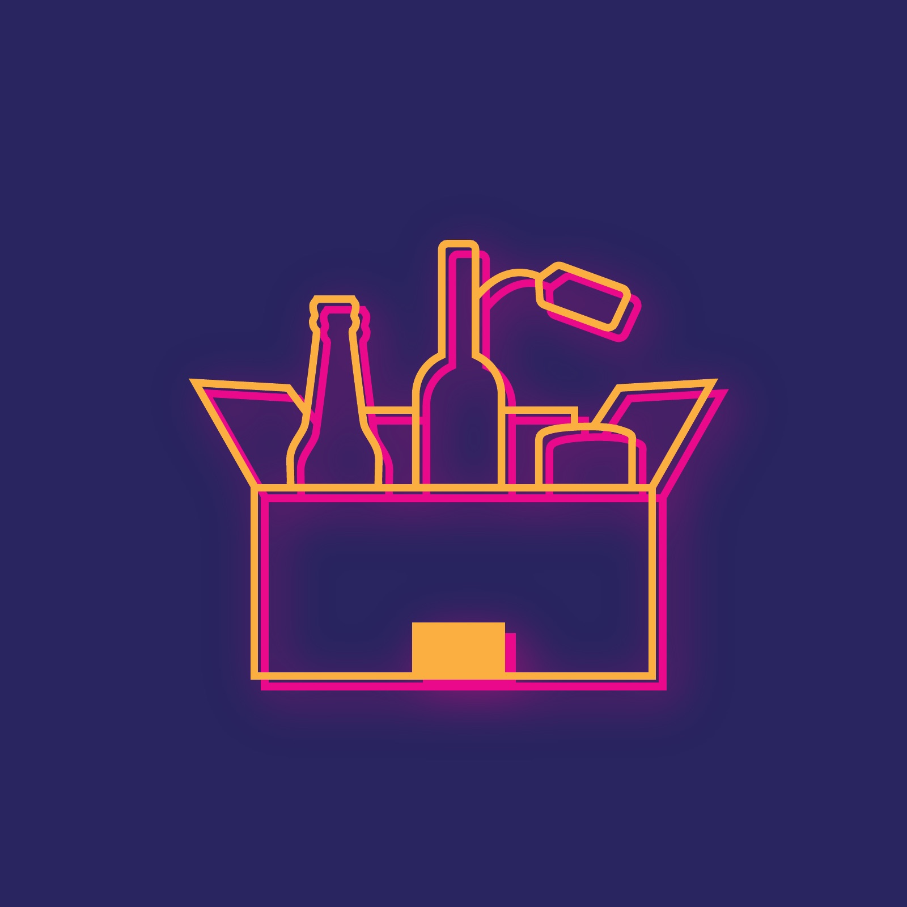</div><figcaption>Bundles.</figcaption></figure>
      <figure><div class="plate video"><video muted loop playsinline preload="none" poster="videos/primeliquor-gorilla-cheers.jpg" src="videos/primeliquor-gorilla-cheers.mp4"></video><span class="play">play</span></div><figcaption>Prime Liquor, cheers loop<span>The gorilla as a two-frame loop for stories.</span></figcaption></figure>
    </div>

    <div class="story">
      <h3>The brief</h3>
      <div><p>A small liquor retailer with a delivery business and a shop, selling everything from soju to Grey Goose, needing brand creative that could be funny on Instagram on a Friday and still look right on a gift bag. I was the brand manager and the only designer.</p></div>
      <h3>What I did</h3>
      <div>
        <p>I wrote the brand book so that the identity could survive being used by partners and the shop team without me: the logo lockups and clear space, the dos and don'ts, the fonts and the six-colour palette. Then the pieces built on it: delivery and promo icon sets in the neon style for the web shop, the carrier bag and its Christmas edition, product photography for the festive catalogue shot in-house, a full playing-card deck drawn around the gorilla, and launch banners like the Clumzy Plumzy one, built once and cut for web and social. The weekly e-commerce banners and bundles were the volume work underneath.</p>
      </div>
      <h3>What I would point to</h3>
      <div>
        <ul>
          <li>The brand book. A small retailer does not usually have one, and it is what kept the Friday Instagram posts and the gift bag looking like the same company.</li>
          <li>Taking an existing mascot and giving it enough range to carry a year of promotions and a 52-card deck without getting tired.</li>
        </ul>
      </div>
    </div>
  </article>

  <!-- Yoku Moku -->
  <article class="project" id="yokumoku">
    <div class="project-head">
      <h2><small>06 · Catalogue, red packets and art direction</small>Yoku Moku</h2>
      <dl class="meta">
        <dt>Client</dt><dd>Yoku Moku Singapore, a Japanese confectionery brand</dd>
        <dt>Year</dt><dd>2025, freelance</dd>
        <dt>Role</dt><dd>Layout, art direction of product photography, web build</dd>
        <dt>Deliverables</dt><dd>Autumn &amp; Winter and Spring &amp; Summer catalogues, long-scroll web and print, product cut-outs, hero banners, allergen icon set; a four-design Chinese New Year red packet series with belly bands and gift tags</dd>
      </dl>
    </div>

    <div class="grid g3 r34">
      <figure><div class="plate">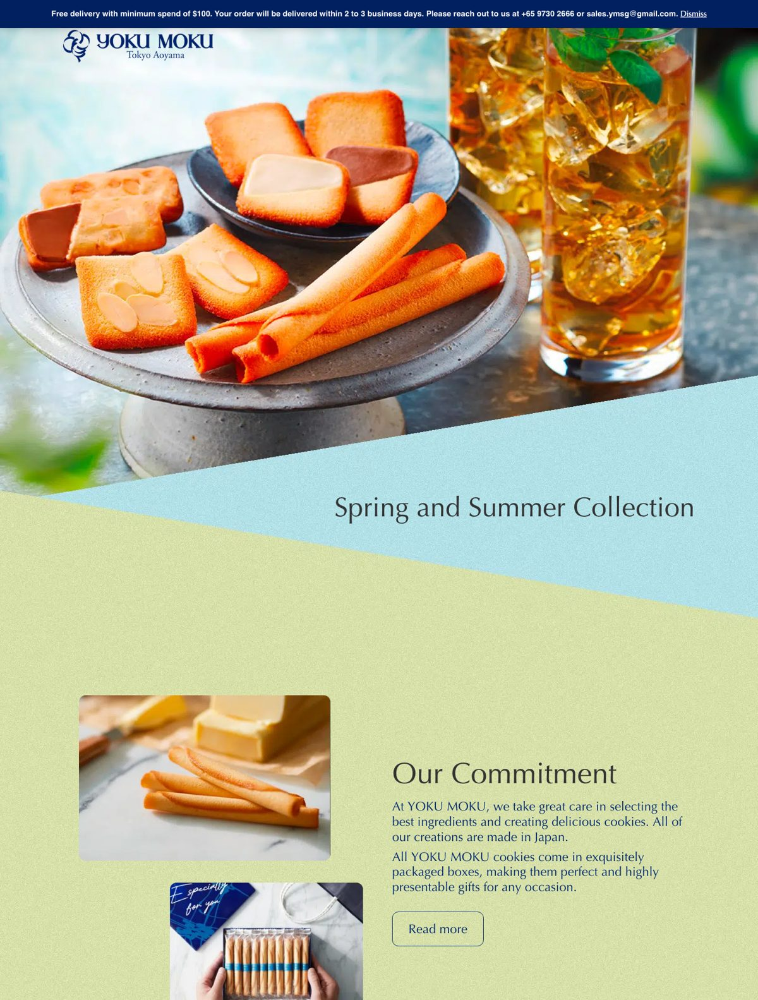</div><figcaption>Spring &amp; Summer catalogue, live at yokumoku.com.sg. Opening, commitment and product index.</figcaption></figure>
      <figure><div class="plate">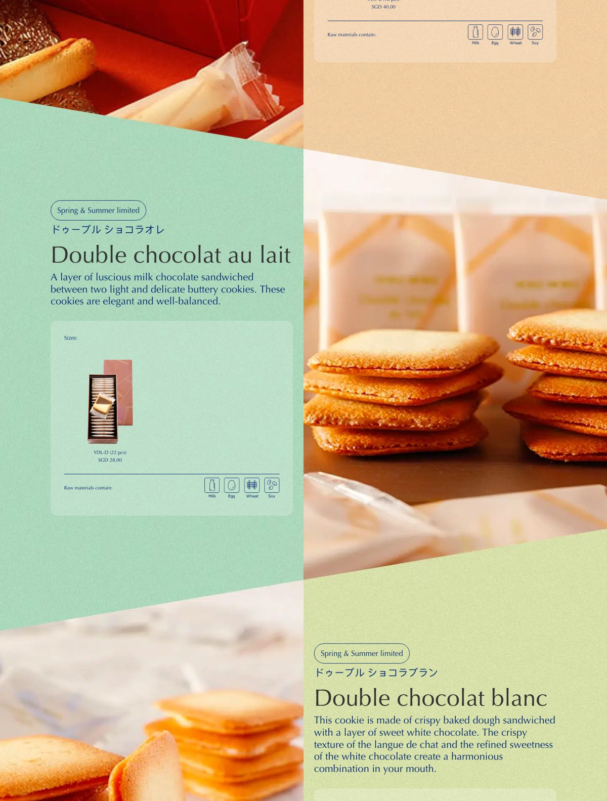</div><figcaption>Product spreads. One colour block per product, lifted from its tin.</figcaption></figure>
      <figure><div class="plate">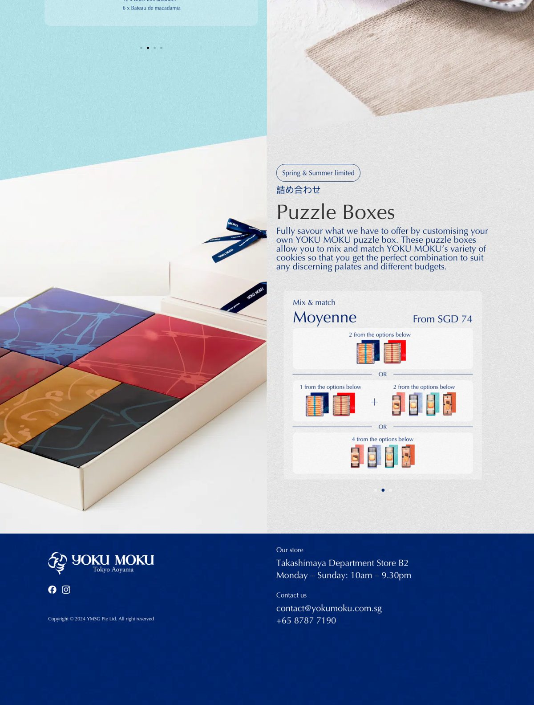</div><figcaption>Assortments, puzzle boxes and store details.</figcaption></figure>
    </div>
    <div class="grid g3 r34">
      <figure><div class="plate">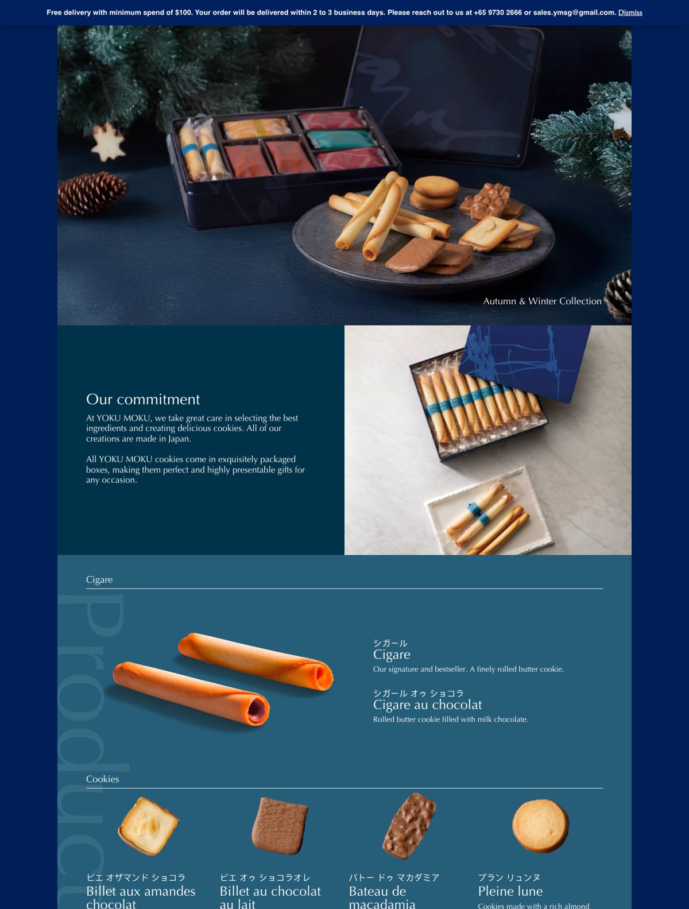</div><figcaption>Autumn &amp; Winter catalogue, live. Same system, warmer palette.</figcaption></figure>
      <figure><div class="plate">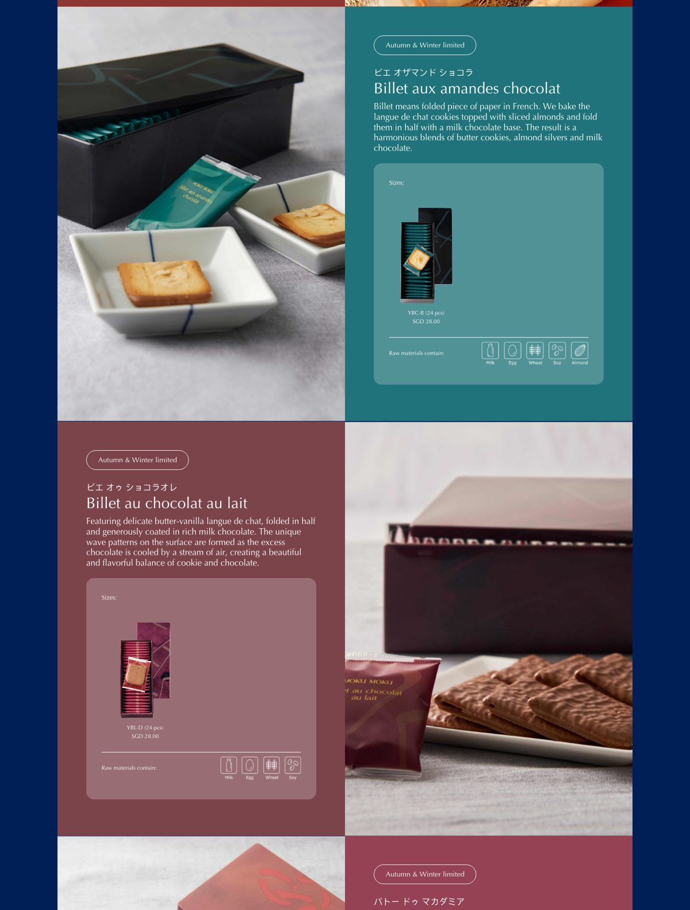</div><figcaption>Mid-section.</figcaption></figure>
      <figure><div class="plate">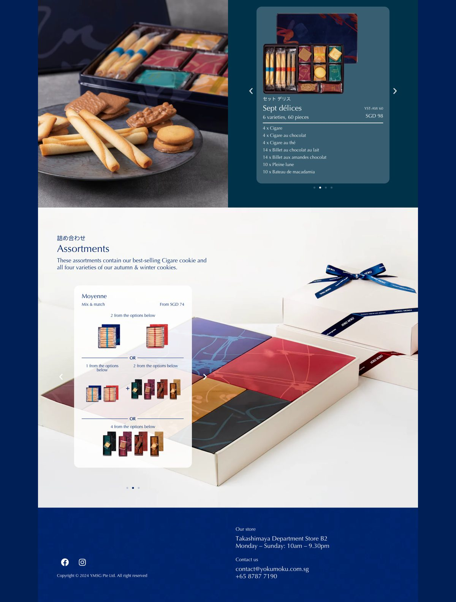</div><figcaption>Assortments and store details.</figcaption></figure>
    </div>
    <figure class="band"><div class="plate">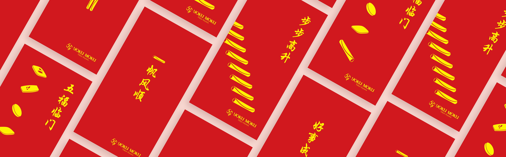</div><figcaption>The Chinese New Year series. Four auspicious phrases, each illustrated with the brand&rsquo;s own cookies in gold on red. Printed as one set, so they had to read as a family from across a room and still be told apart in the hand.</figcaption></figure>
    <div class="grid g4 r34">
      <figure><div class="plate">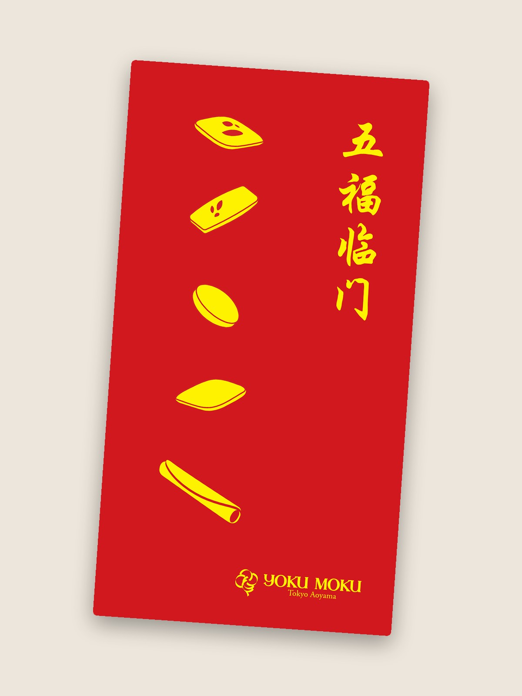</div><figcaption>五福临门. The cookies stand in for the blessings.</figcaption></figure>
      <figure><div class="plate">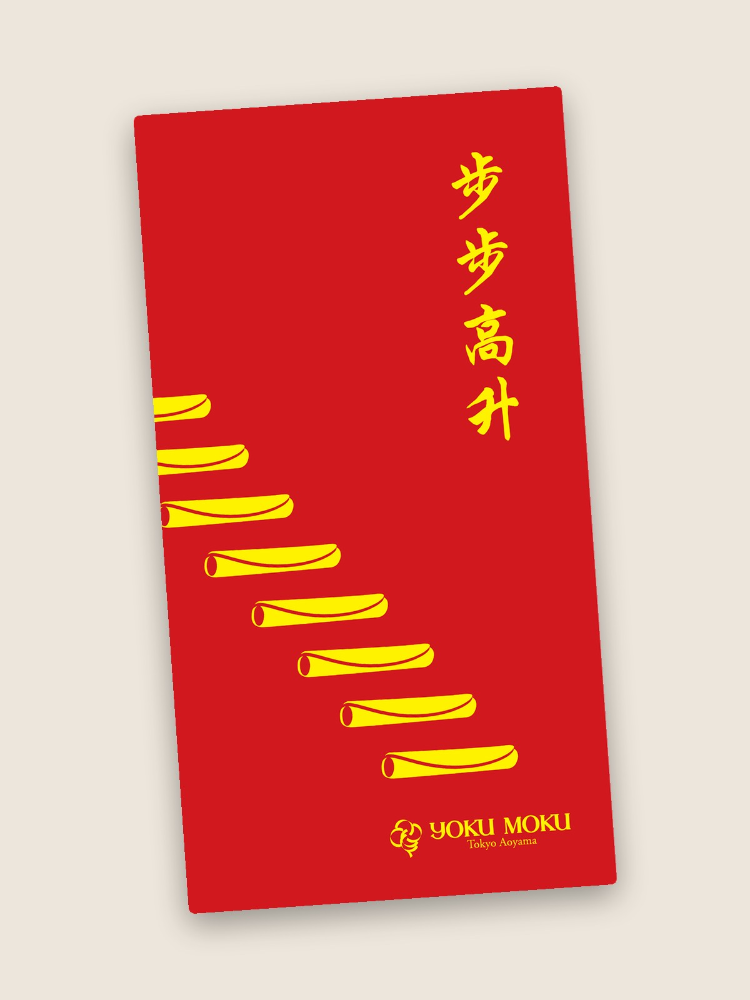</div><figcaption>步步高升. Cigare cookies as the steps.</figcaption></figure>
      <figure><div class="plate">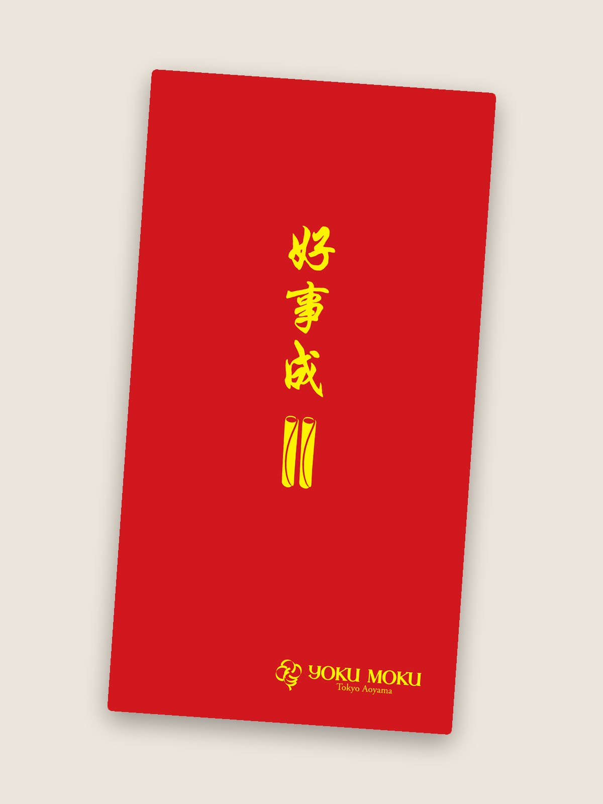</div><figcaption>好事成双. Two Billets for the pair.</figcaption></figure>
      <figure><div class="plate">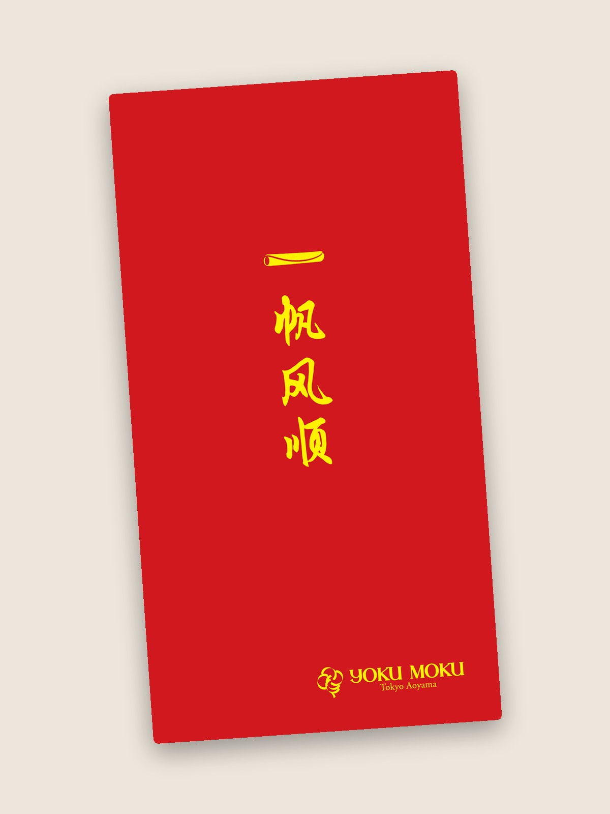</div><figcaption>一帆风顺. One cookie for the sail.</figcaption></figure>
    </div>
    <div class="grid g3 r11">
      <figure><div class="plate video"><video muted loop playsinline preload="none" poster="videos/yokumoku-heritage-1969.jpg" src="videos/yokumoku-heritage-1969.mp4"></video><span class="play">play</span></div><figcaption>Yoku Moku, 1969 till present<span>35 s, heritage post.</span></figcaption></figure>
      <figure><div class="plate video"><video muted loop playsinline preload="none" poster="videos/yokumoku-christmas-town.jpg" src="videos/yokumoku-christmas-town.mp4"></video><span class="play">play</span></div><figcaption>Yoku Moku, Christmas town<span>15 s, illustration animated.</span></figcaption></figure>
      <figure><div class="plate video"><video muted loop playsinline preload="none" poster="videos/yokumoku-snowy-window.jpg" src="videos/yokumoku-snowy-window.mp4"></video><span class="play">play</span></div><figcaption>Yoku Moku, snowy window<span>15 s.</span></figcaption></figure>
    </div>

    <div class="story">
      <h3>The brief</h3>
      <div><p>A seasonal product catalogue that had to work as a long-scroll web page and as a printed piece, for a brand whose packaging is already very considered. The catalogue had to sit quietly next to the tins and not compete with them.</p></div>
      <h3>What I did</h3>
      <div>
        <p>I set the layout on a strict alternating grid, one colour block per product with the colour lifted from its packaging, product cut-outs and lifestyle photography in the same slot on each spread, and a small allergen icon set that repeats at the foot of every product. Japanese product names sit above the French ones at a smaller size. The same file produced the web version and the print version; both catalogues are live at yokumoku.com.sg.</p>
        <p>The red packets are a separate job for Chinese New Year. Each of the four auspicious phrases is illustrated with the brand's own cookies in gold on red: five falling cookies for 五福临门, a staircase of Cigares for 步步高升. They went to print with belly bands and gift tags in the same system.</p>
      </div>
      <h3>What I would point to</h3>
      <div>
        <ul>
          <li>Restraint. The catalogue is mostly grid, photography and one weight of type.</li>
          <li>The red packets say Yoku Moku without a product photo, which is the test of whether the product is recognisable as a shape.</li>
          <li>One source file for two outputs, which is what a small brand can actually maintain.</li>
        </ul>
      </div>
    </div>
  </article>

  <!-- BabySafe -->
  <article class="project" id="babysafe">
    <div class="project-head">
      <h2><small>07 · Character system and packaging range</small>BabySafe</h2>
      <dl class="meta">
        <dt>Company</dt><dd>Dynamic Resources, Singapore. BabySafe is its baby bedding brand (natural latex pillows and mattresses)</dd>
        <dt>Year</dt><dd>2019 – 2021, in-house as Graphic Designer &amp; Marketing Coordinator at Dynamic Resources</dd>
        <dt>Role</dt><dd>Character design, packaging range, retail and event creative, illustration</dd>
        <dt>Deliverables</dt><dd>Four-character family (bear, elephant, giraffe, rabbit), packaging for the full pillow and mattress range, feature icon set, care labels and inserts, retail posters, a product video per SKU, seasonal social animation</dd>
      </dl>
    </div>

    <div class="grid g2 r43">
      <figure><div class="plate contain" style="background:#f4d95a;border-color:#f4d95a"></div><figcaption>Newborn pillow packaging. Every size in the range uses the same layout with the character doing something different.</figcaption></figure>
      <figure><div class="plate contain" style="background:#f4d95a;border-color:#f4d95a"></div><figcaption>Playpen mattress band, with the dimensions table and feature callouts in the same place on every SKU.</figcaption></figure>
    </div>
    <div class="grid g4 r11">
      <figure><div class="plate contain"></div><figcaption>The family. Each character is tied to an age group.</figcaption></figure>
      <figure><div class="plate contain"></div><figcaption>Feature icons used on every pack.</figcaption></figure>
      <figure><div class="plate"></div><figcaption>Christmas social post. The whole family in one scene.</figcaption></figure>
      <figure><div class="plate contain"></div><figcaption>Retail poster, the range by age.</figcaption></figure>
    </div>
    <div class="grid g3 r11">
      <figure><div class="plate video"><video muted loop playsinline preload="none" poster="videos/babysafe-bambeanie.jpg" src="videos/babysafe-bambeanie.mp4"></video><span class="play">play</span></div><figcaption>Product video, Bambeanie pillow<span>60 s explainer, first 30 s shown. One per product in the range.</span></figcaption></figure>
      <figure><div class="plate video"><video muted loop playsinline preload="none" poster="videos/babysafe-mattress.jpg" src="videos/babysafe-mattress.mp4"></video><span class="play">play</span></div><figcaption>Product video, mattress<span>30 s, with the playpen and cot sizes.</span></figcaption></figure>
      <figure><div class="plate contain"></div><figcaption>Packaging header with care symbols.</figcaption></figure>
    </div>

    <div class="story">
      <h3>The brief</h3>
      <div><p>A bedding brand that had been around since 1999 with packaging that had grown one SKU at a time. It needed a system that could cover pillows from newborn to toddler, mattresses in five sizes, and bolsters, and that a parent could read in a shop in a few seconds.</p></div>
      <h3>What I did</h3>
      <div><p>I drew a family of characters, one per age group, and built the packaging as a fixed layout: character, product name and age range top left, feature icons and dimensions in the same place on every pack, care instructions on the reverse. The same characters then carried the retail posters and the seasonal social content, so the brand had one voice from shelf to feed. This is close to three hundred working files, which gives some idea of how many SKUs and sizes there were.</p></div>
      <h3>What I would point to</h3>
      <div>
        <ul>
          <li>A packaging template that a distributor could extend to a new SKU without me.</li>
          <li>Character illustration as a system, with a defined role for each character, rather than a mascot used at random.</li>
        </ul>
      </div>
    </div>
  </article>

  <!-- Zenko -->
  <article class="project" id="zenko">
    <div class="project-head">
      <h2><small>08 · Retail display and packaging</small>Zenko Superfoods</h2>
      <dl class="meta">
        <dt>Client</dt><dd>Zenko Superfoods</dd>
        <dt>Year</dt><dd>2019 – 2021, in-house as Graphic Designer &amp; Marketing Coordinator at Dynamic Resources</dd>
        <dt>Role</dt><dd>Design, production artwork and print liaison</dd>
        <dt>Deliverables</dt><dd>Floor standee (1520 mm) with header, four shelf strips, side panels and back; six-flavour pack range; shipping carton; A4 counter display</dd>
      </dl>
    </div>

    <div class="grid g2 r43">
      <figure><div class="plate contain"></div><figcaption>Standee, 580 × 1520 × 250 mm, dimensioned for the fabricator.</figcaption></figure>
      <figure><div class="plate contain"></div><figcaption>Side panels. Raw ingredients next to the pack so the flavour reads from across the aisle.</figcaption></figure>
      <figure><div class="plate contain"></div><figcaption>Header panel. The claim icons (plant-based, gluten-free) are placed where a shopper stands to read.</figcaption></figure>
      <figure><div class="plate contain"></div><figcaption>Shelf strips and back panel.</figcaption></figure>
    </div>
    <div class="grid g3 r11">
      <figure><div class="plate contain"></div><figcaption>Pack range, six flavours.</figcaption></figure>
      <figure><div class="plate video"><video muted loop playsinline preload="none" poster="videos/zenko-time-for-a-break.jpg" src="videos/zenko-time-for-a-break.mp4"></video><span class="play">play</span></div><figcaption>Zenko, time for a break<span>5 s stop-motion style.</span></figcaption></figure>
      <figure><div class="plate video"><video muted loop playsinline preload="none" poster="videos/zenko-1111-bag.jpg" src="videos/zenko-1111-bag.mp4"></video><span class="play">play</span></div><figcaption>Zenko × RedMart 11.11<span>2 s loop.</span></figcaption></figure>
    </div>

    <div class="story">
      <h3>The brief</h3>
      <div><p>A popped water-lily seed snack going into supermarkets, needing a floor display that would carry six flavours and explain the product to shoppers who had never heard of it, on a distributor's budget.</p></div>
      <h3>What I did</h3>
      <div>
        <p>I designed the standee as a set of surfaces with different jobs: the header for the product name and claims at eye level, the side panels for flavour and appetite from a distance, the shelf strips for one-line messages. Everything was drawn to the fabricator's dimensions and delivered as final artwork with bleed. I also produced the six-flavour pack range and the shipping carton.</p>
      </div>
      <h3>What I would point to</h3>
      <div>
        <ul>
          <li>The written rationale on each panel: the presentation explains why each surface is designed the way it is, which made sign-off with the brand owner quick.</li>
          <li>Production: dielines, CMYK, bleed, fabricator liaison. This is the end of the job I still do myself.</li>
        </ul>
      </div>
    </div>
  </article>

  <!-- Mustela -->
  <article class="project" id="mustela">
    <div class="project-head">
      <h2><small>09 · Campaigns, illustration and content for a distributor brand</small>Mustela Singapore</h2>
      <dl class="meta">
        <dt>Company</dt><dd>Dynamic Resources, Singapore, the distributor of Mustela, a French baby and maternity skincare brand</dd>
        <dt>Year</dt><dd>2019 – 2021, in-house as Graphic Designer &amp; Marketing Coordinator at Dynamic Resources</dd>
        <dt>Role</dt><dd>Campaign concepts, key visuals, illustration, video shoots and editing, retail and marketplace creative, on a weekly cycle</dd>
        <dt>Deliverables</dt><dd>Casting Call Baby 2020/21 campaign (key visual, studio shoot, ~30 winner videos, teasers, behind-the-scenes series), #WhatMumsWant series, Avocado Hunt in-store activation, hand-drawn ingredient illustration set, newborn guide, packaging-message infographic, marketplace banners for Shopee, Lazada and Qoo10</dd>
      </dl>
    </div>

    <figure class="plate full"><figcaption>Casting Call Baby 2020/2021. The key visual: an empty studio set, because the babies were the point.</figcaption></figure>
    <div class="grid g4 r11">
      <figure><div class="plate video contain"><video muted loop playsinline preload="none" poster="videos/mustela-casting-bts.jpg" src="videos/mustela-casting-bts.mp4"></video><span class="play">play</span></div><figcaption>Studio shoot, behind the scenes<span>20 s of the raw GoPro footage. We ran the shoots in-house.</span></figcaption></figure>
      <figure><div class="plate video"><video muted loop playsinline preload="none" poster="videos/mustela-casting-kayler.jpg" src="videos/mustela-casting-kayler.mp4"></video><span class="play">play</span></div><figcaption>Winner video, Kayler<span>One of ~30, each with a name lockup and a trophy.</span></figcaption></figure>
      <figure><div class="plate video"><video muted loop playsinline preload="none" poster="videos/mustela-casting-enzo.jpg" src="videos/mustela-casting-enzo.mp4"></video><span class="play">play</span></div><figcaption>Winner video, Enzo</figcaption></figure>
      <figure><div class="plate video contain"><video muted loop playsinline preload="none" poster="videos/mustela-revealing-babies.jpg" src="videos/mustela-revealing-babies.mp4"></video><span class="play">play</span></div><figcaption>"Revealing SG Mustela babies" teaser<span>5 s, story format.</span></figcaption></figure>
    </div>

    <div class="grid g3 r11">
      <figure><div class="plate contain"></div><figcaption>Sticker sheet for the stores.</figcaption></figure>
      <figure><div class="plate contain"></div><figcaption>Avocado Hunt with Kiddy Palace. A four-step in-store activation, S$2,000 in prizes.</figcaption></figure>
      <figure><div class="plate contain"></div><figcaption>New-packaging explainer. The characters do the work the copy would otherwise have to.</figcaption></figure>
    </div>

    <div class="grid g3 r11">
      <figure><div class="plate video"><video muted loop playsinline preload="none" poster="videos/mustela-whatmumswant.jpg" src="videos/mustela-whatmumswant.mp4"></video><span class="play">play</span></div><figcaption>#WhatMumsWant<span>60 s portrait series, mothers answering one question.</span></figcaption></figure>
      <figure><div class="plate video"><video muted loop playsinline preload="none" poster="videos/mustela-baby-milestones.jpg" src="videos/mustela-baby-milestones.mp4"></video><span class="play">play</span></div><figcaption>Baby milestones<span>"We asked parents what their baby's first word was."</span></figcaption></figure>
      <figure><div class="plate contain"></div><figcaption>Newborn set guide, print and in-box.</figcaption></figure>
    </div>
    <div class="grid g3 r11">
      <figure><div class="plate contain"></div><figcaption>Skin-type posts. The ingredient decides the colour.</figcaption></figure>
      <figure><div class="plate contain"></div><figcaption>Brand statement post.</figcaption></figure>
      <figure><div class="plate video"><video muted loop playsinline preload="none" poster="videos/mustela-authorised-distributor.jpg" src="videos/mustela-authorised-distributor.mp4"></video><span class="play">play</span></div><figcaption>Authorised distributor explainer<span>36 s, for the marketplace listings.</span></figcaption></figure>
    </div>

    <div class="story">
      <h3>The brief</h3>
      <div><p>Mustela is a French brand with its own global identity, so the job was never to design the brand. It was to keep a distributor's Singapore presence alive every week for two years: local campaigns, retail activations, marketplace sales creative on Shopee, Lazada and Qoo10, and enough content to feed the social accounts, on a small team where I was the designer, the illustrator and often the camera.</p></div>
      <h3>What I did</h3>
      <div>
        <p>The biggest piece was Casting Call Baby, two years running. I concepted it, built the key visual, ran the studio shoots, then cut around thirty winner videos in one frame system so they could go out one a day. Around that I drew an illustration family for the brand's ingredients and used it everywhere: stickers, the in-store Avocado Hunt with Kiddy Palace, the newborn guide, the packaging explainer, the skin-type posts. The maternity content got a quieter treatment: #WhatMumsWant and the baby-milestones series. Underneath all of it were the weekly marketplace banners, several hundred of them, which is the volume work that kept the listings selling.</p>
      </div>
      <h3>What I would point to</h3>
      <div>
        <ul>
          <li>Building local campaigns inside someone else's brand system without breaking it, which is the same discipline as the Webull work, in FMCG.</li>
          <li>The illustration family. One set of characters carried two years of content and made the distributor's feed look like its own thing.</li>
          <li>Running the shoots as well as designing the output.</li>
        </ul>
      </div>
    </div>
  </article>

  

  

  

  

  

  

  

  

  

  

  <!-- Other work -->
  <section class="other" id="other">
    <p class="label">Other work</p>
    <h2 style="margin-top:14px">Namecards for a hair salon.</h2>
    <p style="margin-top:14px; color: var(--ink-soft)">A small piece that does not need a full case study.</p>
    <div class="other-grid">
      <figure><div class="plate contain"></div><figcaption>Be U Hair Design stylist namecards<span>Each stylist got a line-drawn portrait on their card.</span></figcaption></figure>
    </div>
  </section>

  <!-- How I work -->
  <section class="lead" id="lead">
    <p class="label">How I work</p>
    <h2 style="margin-top:14px">How I work, and what I have not done yet.</h2>
    <div class="lead-grid">
      <h3 class="label" style="padding-top:6px">Message before material</h3>
      <div><p>I start with who needs to understand what, and what they will do with it. At Partior that meant one settlement flow told at four depths for four kinds of reader. At Webull it meant explaining order types to first-time investors before asking them to trade. The design comes after that is settled.</p></div>
      <h3 class="label" style="padding-top:6px">Ownership and approvals</h3>
      <div><p>Most of my work goes out under more than one organisation's name. Product owners are responsible for what is technically true, and partners approve anything carrying their brand. I recommend how something should be said and why, and I agree it with the right people early, because a message changed at review costs much more than one settled at the brief.</p></div>
      <h3 class="label" style="padding-top:6px">Running the function</h3>
      <div><p>For most of the last three years I have been the only person in marketing and communications. That covers the plan, the channels, the content, partner announcements, events, the website and the agency. In 2026 that has meant 20,000 active website users, 21 marketing-sourced leads in a sales cycle where a lead is a bank, and over S$77,000 of recurring annual cost removed by benchmarking agency rates and cutting event spend that was not delivering.</p></div>
      <h3 class="label" style="padding-top:6px">Regulated categories</h3>
      <div><p>Seven years of financial and healthcare brands means legal and compliance are usually in the approval chain. I write and design so the review is short, and I plan the schedule around it.</p></div>
      <h3 class="label" style="padding-top:6px">Measurement</h3>
      <div><p>I report on GA4, Search Console, LinkedIn and Looker Studio dashboards, and map each programme to the company objective it supports. I have not run a formal brand tracker with a research partner.</p></div>
      <h3 class="label" style="padding-top:6px">Directing others</h3>
      <div><p>At Partior I direct an external communications agency and production vendors, and at Webull I worked with in-market agencies in four countries. I have set briefs, reviewed work, sent it back and held a retainer to scope. I have not been anyone's line manager, and I would rather say that plainly.</p></div>
      <h3 class="label" style="padding-top:6px">Design as a tool</h3>
      <div><p>Because I can make the work, some decisions become available that otherwise would not be: the Partior website built in-house against a US$40,000 agency quote, the cl-air range rendered in Blender instead of photographed, one asset system for every Webull market. I use AI tools daily for research, drafting and format adaptation, and I keep the editorial judgement.</p></div>
    </div>
  </section>

  <!-- About -->
  <section class="about" id="about">
    <p class="label">About</p>
    <h2 style="margin-top:14px">XianLong Yue</h2>
    <div class="about-grid">
      <div>
        
        <p style="margin-top:20px; font-size:15.5px; color: var(--ink-soft)">Communications, brand and marketing, with a design background. Singapore citizen. Professional Diploma in Advertising and Design, M.A.D. School / Chatsworth Medi@rt Academy, 2015–2019, completed in the evenings while working full-time in retail. Certifications in UX design (2021) and Next.js and React (Vercel, 2025).</p>
      </div>
      <div>
        <ul class="timeline">
          <li><span>Aug 2025 – now</span><span>Senior Associate, Marketing &amp; Communications<em>Partior, Singapore</em></span></li>
          <li><span>Nov 2024 – Jul 2025</span><span>Marketing Manager<em>Teleskop Technologies, Singapore</em></span></li>
          <li><span>Jul 2022 – Oct 2024</span><span>Branding Associate<em>Webull Holdings (Singapore)</em></span></li>
          <li><span>Nov 2021 – Jul 2022</span><span>Brand Manager<em>Ponza Trading (Prime Liquor), Singapore</em></span></li>
          <li><span>Jul 2019 – Jun 2021</span><span>Graphic Designer &amp; Marketing Coordinator<em>Dynamic Resources (Mustela &amp; BabySafe), Singapore</em></span></li>
        </ul>
        <div class="contact">
          <a href="mailto:xlcommunicates@gmail.com">xlcommunicates@gmail.com</a>
          <span>+65 8742 1544</span>
          <a href="https://linkedin.com/in/xianlong-yue-673240166">LinkedIn</a>
        </div>
      </div>
    </div>
    <footer>© 2026 XianLong Yue. Client work shown with permission or from public sources; confidential material withheld.</footer>
  </section>
</main>

<script>
(function () {
  var figs = Array.prototype.filter.call(document.querySelectorAll('figure'), function (f) { return f.querySelector('video') && !f.classList.contains('film'); });
  function play(f) { var v = f.querySelector('video'); if (!v) return; f.classList.add('playing'); v.play().catch(function () {}); }
  function stop(f) { var v = f.querySelector('video'); if (!v) return; f.classList.remove('playing'); v.pause(); }
  var canHover = window.matchMedia('(hover: hover)').matches;
  figs.forEach(function (f) {
    if (canHover) {
      f.addEventListener('mouseenter', function () { play(f); });
      f.addEventListener('mouseleave', function () { stop(f); });
    }
    f.addEventListener('click', function () { f.classList.contains('playing') ? stop(f) : play(f); });
  });
})();
</script>
